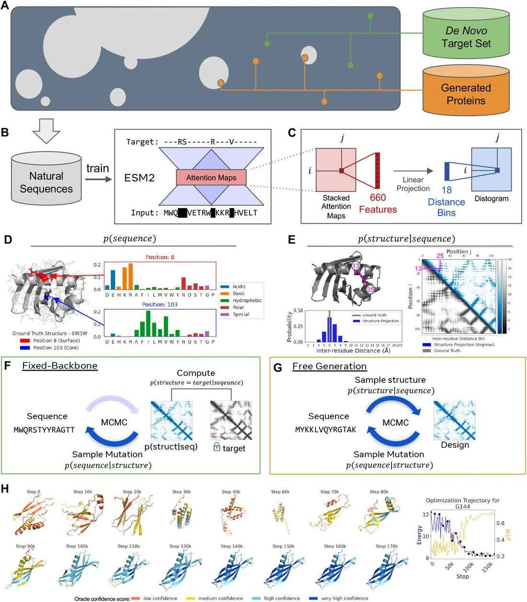
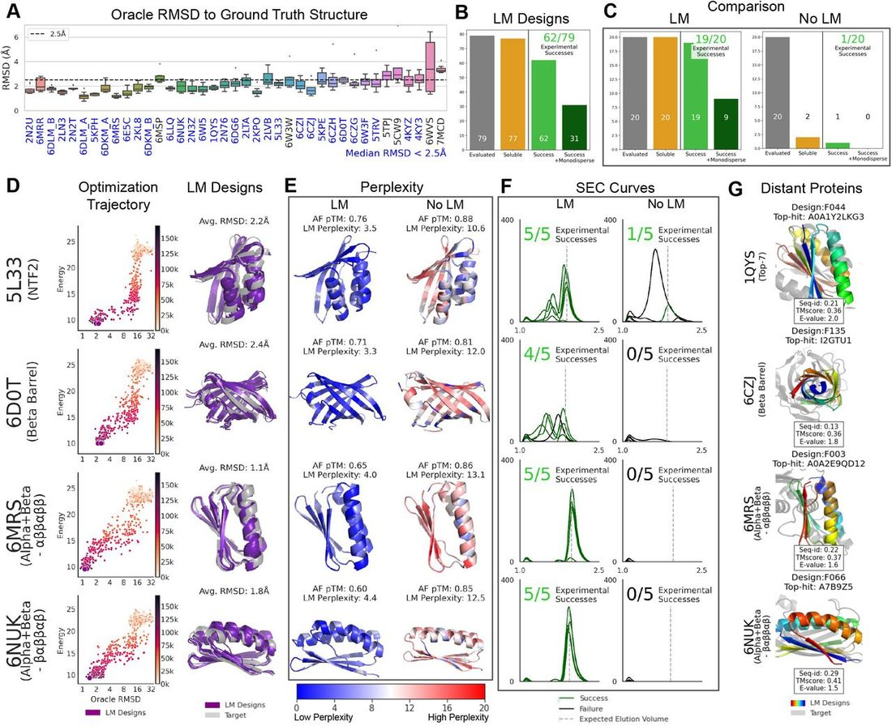
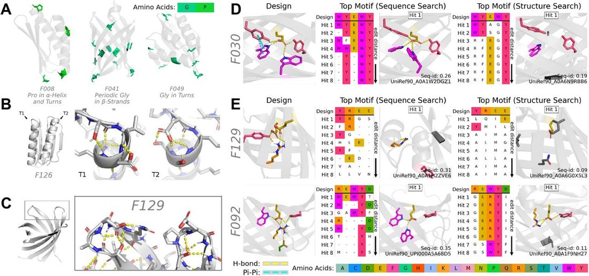
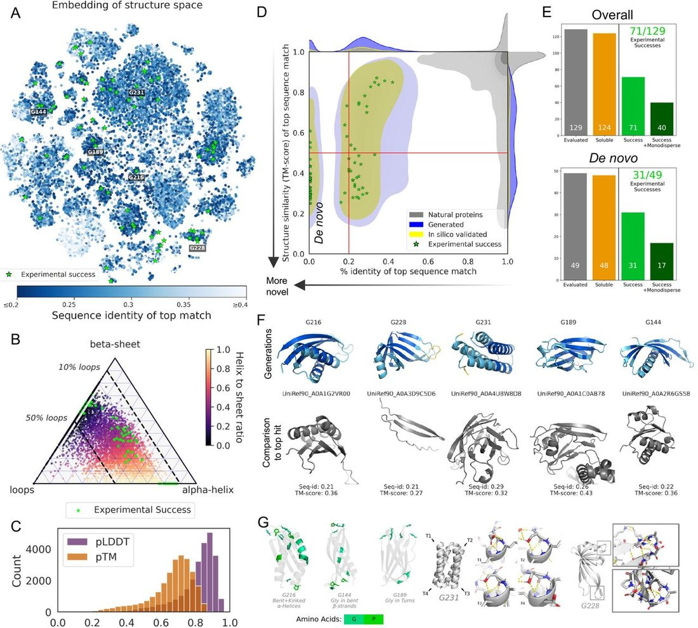

Language models generalize beyond natural proteins
Abstract
Abstract Learning the design patterns of proteins from sequences across evolution may have promise toward generative protein design. However it is unknown whether language models, trained on sequences of natural proteins, will be capable of more than memorization of existing protein families. Here we show that language models generalize beyond natural proteins to generate de novo proteins. We focus on two protein design tasks: fixed backbone design where the structure is specified, and unconstrained generation where the structure is sampled from the model. Remarkably although the models are trained only on sequences, we find that they are capable of designing structure. A total of 228 generated proteins are evaluated experimentally with high overall success rates (152/228 or 67%) in producing a soluble and monomeric species by size exclusion chromatography. Out of 152 experimentally successful designs, 35 have no significant sequence match to known natural proteins. Of the remaining 117, sequence identity to the nearest sequence match is at median 27%, below 20% for 6 designs, and as low as 18% for 3 designs. For fixed backbone design, the language model generates successful designs for each of eight experimentally evaluated artificially created fixed backbone targets. For unconstrained generation, sampled proteins cover diverse topologies and secondary structure compositions, and have high experimental success rate (71/129 or 55%). The designs reflect deep patterns linking sequence and structure, including motifs that occur in related natural structures, and motifs that are not observed in similar structural contexts in known protein families. The results show that language models, though only trained on sequences, learn a deep grammar that enables the design of protein structure, extending beyond natural proteins.
Introduction
Generative artificial intelligence for biology has potential to open up a space of protein design beyond natural proteins. Since amino acid sequences are the fundamental codes of proteins, learning to read and write these codes with a language model may have promise. Language models have played a central role in recent advances in artificial intelligence ( 1 ), including developments in complex reasoning, mathematical problem solving, image generation, and natural language generation ( 2 – 4 ). Scaling laws link performance with the compute, data, and number of parameters used to train the models ( 5 ), and emergence of higher level capabilities is observed with increasing scale ( 6 ). In biology, recent work on evolutionary scale language models of proteins has shown that a deep knowledge of intrinsic biological properties emerges from training on protein sequences ( 7 ). Information about the folded three dimensional structure of proteins develops within the models, extending to atomic resolution structure ( 8 ). This information emerges through training on sequences alone. At the same time the structural information that emerges as a result of training on sequences has been shown to depend on the available evolutionary information, varying as a function of the number of related proteins in the training data ( 8 , 9 ). It is an open question across domains to what extent language models are capable of generalizing outside their training data. In biology, it is unknown whether language models can be used to explore a design space beyond that of natural proteins.
A deep grammar of protein sequences
We hypothesize that there exists a deep underlying grammar in protein sequences that makes it possible for the language model to generalize. To generalize beyond natural proteins, language models will need to access design patterns that extend outside the space of natural proteins. Classically this form generalization has been enabled by an energy function grounded in physics that captures the native folded state ( 10 ). Recently deep learning based methods grounded in structure have been proposed as a new approach to this problem by inverting structure prediction ( 11 , 12 ), or conditioning on backbone structures ( 13 – 15 ). By modeling the structure explicitly during training, new deep learning approaches may capture something similar to the physical energy ( 16 ). The success of language models on this problem suggests that deep patterns in sequences may offer an alternative path to generalization, independent of an explicit model of the underlying physics.
The classical perspective of evolutionary inference from sequences is that information about the properties of proteins is encoded into the sequence patterns of evolutionarily related proteins through conservation and coevolution. This view develops from the observation that the statistics of protein families reflect the constraints acting on the evolution of the sequences including biological structure and function ( 17 , 18 ). This insight has formed the basis for the inference of structure and function from sequences in a protein family ( 19 ), and has also recently been applied with success by generative models to generate new examples from existing protein families ( 20 – 22 ). To date experimental validation of sequence based models for protein design has been limited to natural protein families.
Accessing a de novo design space distant from naturally occurring protein families is a fundamentally more challenging problem. This problem by definition cannot be solved by generating new samples from naturally occurring protein families. To solve this problem with a model grounded in sequences, it will be necessary to learn sequence patterns that generalize beyond individual protein families. Evolutionary scale language models go beyond classic protein family models by training on diverse sequences across evolution which means that they have the potential to learn deep patterns across all proteins, including where there is no experimental structure. There is evidence for local patterns in sequences that generalize beyond individual protein families, in the form of motifs that are local in the sequence ( 23 ) as well as motifs that are local in 3d space ( 24 ). However, the mapping between sequence and structure is not one-to-one ( 25 ), and designing sequences to reach a well-folded native state requires solving an exponentially large combinatorial problem to select a set of local sequence patterns which interact non-locally to specify a coherent structure ( 26 ). To design protein structure, the language model will have to develop an implicit understanding of how sequence determines structure, including local rules that link the design of structure with sequence, as well as global rules that determine whether a sequence is coherent and will fold into a native state.
Generative protein design with language models
We evaluate language models generatively, focusing on generalization beyond natural proteins. The known protein sequences sampled by evolution represent only a small fraction of the vast number of possible proteins ( Fig. 1A ). To generalize outside the space of proteins that has been explored by evolution it will be necessary to access deep patterns of protein design that apply outside this space. We focus on two generative protein design tasks. The first is fixed backbone design where the objective is to generate a sequence that folds to the target structure. This task assesses the ability of the language model, which has been trained only on sequences, to design protein structures. The second task is free generation, where the structure is unconstrained and allowed to vary along with the sequence. This enables characterization of the full generative capability of the model across diverse sequences and structural patterns to understand the space of proteins accessible to the model.

A test set of de novo designed artificial proteins is used to assess generalization beyond natural protein structures. The test set includes a diverse selection (N = 39) of structurally validated artificial protein structures from the Protein Data Bank (PDB) ( 27 ), which span a range of lengths (67 ≤ L ≤ 184), and topologies ( Fig. S1 and Appendix A.1). Importantly, these de novo proteins have meaningful structural differences from proteins belonging to natural folds, including with respect to ideality, exact repetition, and symmetry of elements. Since the language model has not been trained on protein structures, generating designs for these backbones tests for the ability of the model to generalize to structures unlike those of the natural proteins whose sequences it has been trained on.
The language model, ESM2, is an evolutionary scale model of protein sequences that has been trained across the full extent of natural protein sequences ( 28 ). The training dataset excludes artificial sequences, as well as any sequences having similarity to the test set of de novo proteins used in the evaluations (Appendix A.1). ESM2 is trained with the masked language modeling objective ( 29 ) to recover the identity of amino acids from their context in the rest of the sequence ( Fig. 1B ). This training objective has been shown to materialize information about the folded structure of proteins in the internal representations of the model ( 7 – 9 , 30 ). Since the training of the language model is only on sequences, information about structure that emerges must be the result of the unsupervised learning of patterns in sequences.
A linear projection from the attention maps of the language model identifies internal states that reflect protein structure. Previous work has shown that specific attention maps in transformer protein language models such as ESM2 encode the proximity of residue pairs in the structure ( 9 , 30 ). We fit a linear projection that takes the attention between two positions in the protein sequence and outputs a distribution over pairwise distances ( Fig. 1C ). This maps an internal attention state of 660 dimensions into 18 inter-residue distance bins. Because of the limited number of parameters (660 per distance bin for a total of 11,898 including a bias for each distance bin), far too few to represent the immense complexity of possible protein structures, the output can be interpreted as a projection of the structure captured by the internal states of the model. The projection defines an energy landscape (a function of the representation states of the language model rather than a physical energy) that can be used to evaluate the compatibility of any given structure with the representation of the sequence produced by the language model. Application to the de novo target set shows understanding of existing de novo proteins ( Table S1 and Figs. S2 and S3 ).
Together, the models of sequence, and structure given sequence, specify a generative model of proteins defined by the language model. The sequence model assigns a probability to any sequence, by giving a probability for each amino acid at every position in the protein ( Fig. 1D ). For natural proteins these probabilities reflect the functional effects of mutations, structural preferences of amino acids, and aspects of biochemical function ( 31 ). The projection of structure gives a compatibility between the language model’s representation of a sequence with a three dimensional structure ( Fig. 1E ). In this work, we consider these models to specify a generative model for protein design:
For fixed backbone design, protein sequences are generated by taking low temperature samples from the conditional distribution specified by the language model via Markov chain Monte Carlo (MCMC) with simulated annealing ( Fig. 1F , Appendix A.3.1). Free generation removes the constraint on structure entirely and generates new proteins by sampling from the joint distribution of sequence and structure specified by the language model. A blocked Gibbs sampling approach is introduced which alternates between sampling a new structure conditioned on the current sequence, and sampling a new sequence conditioned on the current structure ( Fig. 1G , Appendix A.3.3). An example free generation trajectory is shown in Fig. 1H . As the temperature is lowered, the trajectory proceeds from a phase where it samples a range of possible topologies before narrowing into a single topology that is refined into a confidently predicted structure in the final stage of optimization.
We perform extensive experimental testing of a total of 228 designs from the language model. Designs are considered a success that are well expressed, soluble, and pass a size exclusion chromatography (SEC) test for molecular (hydrodynamic) radius indicative of a properly-folded monomeric species (Appendix A.7). Experimental success of a significant fraction of the generated proteins, along with independent computational evaluation of the structures, demonstrates that language models are able to access a design space beyond that of natural proteins.
Language models design sequences that fold to de novo structures
Fixed backbone design evaluates generation of sequences to realize a specified target structure. Use of de novo designed structures as targets requires the model to generalize beyond natural proteins, necessitating the use of more general patterns for the design of structure. Success at this task would indicate that the model has an understanding of the underlying design principles of protein structure generalizing to structures not encoded by natural sequences.
Across the test set of 39 artificially designed de novo protein structures, fixed backbone designs generated by the language model are predicted to closely match the target structures by the AlphaFold high-resolution structure prediction oracle. We generate 200 different designs for each of the de novo target structures (Appendix A.4). The generative model succeeds in producing low-RMSD designs for the vast majority of targets in the de novo test set ( Fig. 2A ). Subsetting to the best 10 of 200 designs by the language model’s optimization objective, median RMSD is < 2.5A for 84% (33/39) of targets and minimum RMSD is < 2A for 90% (35/39) of targets. Structures are also confidently predicted, with median pTM > 0.7 for 56% (22/39) and maximum pTM > 0.7 for 90% (35/39). Average sequence identity with the targets is low (22%), indicating that the language model is finding solutions to the design problem that differ from the original sequence.

Generated proteins have high overall experimental success rates in the laboratory. We ran an additional set of fixed backbone design trajectories to explore the diversity of design motifs generated from the model. A total of 79 fixed backbone designs spanning 6 de novo targets were selected from a pool including the additional trajectories for evaluation by a variety of criteria including the presence of interesting structural motifs (Appendix A.6). Out of this set of experimentally tested proteins, 97% (77/79) were soluble, 78% (62/79) were successful, passing a SEC test for the presence of a peak at the expected elution volume indicating a folded monomeric species, and 39% (31/79) were monodisperse, exhibiting only a single SEC peak at the expected elution volume ( Fig. 2B ). Successes span a range of topologies, including a success for length 182 de novo TIM-barrel 6WVS which has a highly idealized symmetric structure ( Fig. S4 ). Across the set of experimental successes, sequence identity to the original sequence of the target structure is low (mean = 24%), which suggests that the language model is exploring a new design space for the target structures.
We perform a controlled experiment to understand the role of the language model in experimental success of designs. For comparison we use AlphaFold as a model of the probability of structure given sequence. For a set of four fixed backbone de novo targets with distinct folds, we generate 200 designs using each method, with the top 5 by optimization objective for each method selected for experimental evaluation (Appendix A.3). Experimentally, 95% (19/20) of language model sequence designs and 5% (1/20) designs without a language model were successful ( Fig. 2C ). Augmenting AlphaFold with an n-gram prior, fails to rescue the designs (0% success rate, 0/20) ( Tables S3 and S4 ).
Language model perplexity separates success from failure across both design methods. MCMC trajectories for the language model funnel to low RMSD with decreasing energy, with average RMSD values ranging from 1.1Å to 2.4Å ( Fig. 2D ). Notably, while ÅlphaFold confidently predicts the structures of language model designs, the language model does not assign high sequence likelihoods to ÅlphaFold designs. Language model perplexities of select ÅlphaFold-designed sequences range from 10.6 to 13.1 ( Fig. 2E ), significantly higher than the average de novo target sequence perplexity of 6.7. Other metrics have limited ability to identify experimental success ( Fig. S5 and Table S4 ): the Rosetta all-atom energy function for modeling and design ( 32 , 33 ) judges both sets to be good designs, packing metrics are similar but slightly favor the (unsuccessful) ÅlphaFold designs, while hydrophobicity and SÅP score favor the language model designs. Recently autoregressive inverse folding models directly conditioned on the target structure have demonstrated high experimental success rates in the laboratory ( 15 ). We generated sequences with ProteinMPNN and ESM-IF1 ( 14 ). Both models achieve high local confidence pLDDT (> 90 mean). Their ESM pseudo-perplexity is 5.76 and 5.79 respectively, higher than ESM designs and significantly lower than ÅlphaFold designs ( Table S2 ), in line with high experimental success rates reported for those methods.
Experimental evaluation of both design sets (with and without the language model) indicates that 19/20 of language model designs are successful and 9/20 are monomeric ( Fig. 2F ). Target 6D0T has no monomeric designs from the language model, though the ground truth de novo sequence was also found to not be monomeric, when tested as a positive control (Åppendix Å.7). Designs without a language model largely fail due to insolubility.
Including the results of the controlled comparison, and the larger set of designs evaluated, the language model produced experimentally successful designs for all of a total of 8 de novo backbones. One possibility is that language model designs succeed because the model retrieves a protein similar to the target from its training set. To rule this out, we analyze the overall set of 81 experimental successes. Each design is searched against UniRef90 (which fully includes the sequences used to train the language model) to identify similar sequences (Åppendix Å.5). For 17 successful designs spanning 4 backbones, there are no significant (E-value < 1) sequence matches whatsoever in the training set. Four of these are shown in Fig. 2G . Of the remaining 64, sequence identity to the nearest sequence match is only 27% on average, and is < 30% for 41 of the 64, spanning each of the 8 tested backbones. This suggests that the model is not solving the design problem by retrieving similar sequences it has memorized.
To further understand whether the model is using homology at the threshold of detection by sequence similarity, we obtained AlphaFold predicted structures of hits, including those that do not reach the significance cutoff (Appendix A.5; Fig. S6 ). For 19/81 experimental successes top Jackhmmer hits are not structural matches to the design. For 19 designs spanning 4 backbones, the top-10 jackhmmer hits (including those that do not reach the significant threshold) all have TM-score < 0.6. For 8 of those designs spanning the same 4 backbones, top-10 hits are all likely to be a different fold (TMscore < 0.5). This suggests that while in some cases the model is able to use sequence homology at the threshold of detection, there are also cases where it appears to have generalized beyond that, further evidence that in many cases the language model is generating novel solutions to the design problem which differ both from the ground-truth sequence, and natural proteins.
Language models materialize deep patterns of protein design
Generated proteins show evidence of using deep patterns of the design of protein structure. These patterns occur in the form of structural motifs used in the design of natural proteins applied in significantly differing sequence contexts, as well as the formation of motifs which cannot be found in related structures. Two well-studied ways that sequence determines structure are through amino acids that constrain backbone-geometry, and through the role of chemically diverse side chains in determining the intermolecular forces that stabilize a protein’s particular folded conformation. Two amino acids which influence backbone geometry are proline and glycine. These two amino acids add flexibility to and bend protein backbones, respectively. In three example designs, the language model places these residues to induce curvature in various secondary structure elements: a proline bends an alpha-helix, regular placement of glycines in beta-sheets promote the flexibility to form a beta-barrel, and all but one glycine are placed in loops in an NTF2 design ( Fig. 3A ). A side chain based motif present through fixed backbone designs is helix dipole capping, where side chains of amino acids at the ends of alpha-helices obscure otherwise exposed polar backbone atoms in the final alpha-helix turn ( Fig. 3B ). A second side chain based motif is hydrogen-bond networks in bulge-containing beta-turns, which are present in fixed backbone designs for beta-barrels, such as 6D0T and 6CZJ ( Fig. 3C ). This and to a larger extent the periodic glycines in beta-strands in Fig. 3A were identified as natural motifs that enabled successful de novo design of the target beta-barrel in ( 34 ).

Designs also exhibit complex hydrogen bonding networks. Some design successes include hydrogen bonding networks between four or more polar and even charged residues in the interior of structures. Design of buried polar and charged interactions is difficult due to the geometric constraints of energetically satisfying such interactions ( 35 ). Notably, the bond networks shown span a range of intermolecular force categories: among predicted structures, F129, a beta-barrel, contains a salt-bridge, F025 contains a pi-cation bond, and F030 contains a T-shaped pi-pi interaction ( Fig. S7 ). The original designs for the examples shown have purely hydrophobic interiors. While these hydrogen bonding networks can only be fully confirmed by high-resolution structural studies, the biophysical properties observed (high yield of monodisperse protein with the expected retention volume) is consistent with their accuracy, since inaccurate placement of these residues is likely to lead to mis-folding and aggregation.
The hydrogen-bonding networks with polar residues are realized in new sequence contexts, indicating a strong form of generalization beyond the sequences used for training the model. We retrieve the most similar aligned sequences via Jackhmmer search of UniRef90 and similar, aligned structures via Foldseek ( 36 ) search of AlphaFold DB ( 37 ). Returned sequences are all sorted by minimum edit distance at aligned motif positions, and the closest matching motif is shown. (Appendix A.5.4). For generated protein F030 ( Fig. 3D , Fig. S7 ), sequence search does recover a natural protein with this motif in aligned positions. However the surrounding sequence context in the design is dissimilar, having a full-sequence identity of 26%. For F129 and F092 ( Fig. 3E , Fig. S7 ), not only does the surrounding sequence context have low sequence identity, the motif itself is not present in the aligned positions of any matching natural sequences or structures. Use of these motifs in fixed backbone designs is a remarkable form of generalization, since the model is applying them in new sequence contexts, and structures that are distinct from natural proteins.
Language models generate novel structures and sequences
Language models generate new protein sequences that differ significantly from natural sequences. We sample a large set (N = 25,000) of proteins of fixed length (L = 100) without constraint on the structure. The blocked Gibbs sampling method which traverses the joint landscape of sequence and structure provides a more diverse set of proteins than previous unconstrained generation methods ( Table S5 ).
Generations cover a variety of topologies with sequences overall dissimilar from natural proteins. Structures are predicted for all generated sequences using Alphafold, and generations are projected into two dimensions using t-SNE based on their pairwise structural distance measured by TM-score ( Fig. 4A ). In a hierarchical clustering of the structures, 7,663 distinct clusters were identified at a TM-score threshold of 0.75. The distribution of the generated secondary structures reveals a range of patterns with 52% of generations containing mostly alpha helices, 22% containing mostly beta sheets, and 28% a mix of alpha helices and beta sheets ( Fig. 4B ). A large fraction of the generations are well predicted by the oracle (median pLDDT = 84.49, 70% pLDDT > 70; Fig. 4C ).

Many of the generations are distant in sequence from natural proteins. We measure the distance of generated sequences from natural proteins by searching each generation against the 200M natural sequences in AlphaFold DB ( 37 ). This also enables comparison of the structure of the nearest sequence match to that of the generated protein. Overall the language model generates proteins which show a clear separation from the distribution of natural proteins, including a fraction that are distant from known proteins. Fig. 4D shows the distribution of similarity to known proteins, where each generation is plotted according to its sequence (x-axis) and structural (y-axis) similarity to its top sequence hit, with insignificant (E-value > 1) hits placed at x=0 (16.6% of generations, in total). A large part of the distribution of generated proteins have structures different from those predicted for their nearest sequence match, further evidence that the model is not simply memorizing known proteins. A set of 15k natural proteins are also shown. Natural proteins cluster in the upper right corner, while generated proteins occupy a distinct part of the space. A significant fraction of the language model generated proteins (15.5%) have minimal similarity to natural proteins (lower left quadrant), with minimal sequence similarity (Seq-id < 0.2) of the nearest match, and a predicted structure likely to be a different fold (TM-score < 0.5).
A large fraction of the designs, including those that are distant from natural proteins, succeed experimentally. We selected a number of designs that passed our in silico quality filters for experimental evaluation. Out of the total set of generations, 20% (N = 5,198) passed the quality filters (Appendix A.4). A total of 129 of that set were expressed and evaluated, and 55% (71/129) were found to be experimentally successful. The 71 structures and their metrics are shown in Fig. S8 , marked with a green star in Figs. 4A, 4B and 4D . Overall, 96% of the free generations that were evaluated were soluble, 55% had an elution volume peak in the correct confidence interval, and 30% were monodisperse ( Fig. 4E top, Appendix A.7).
A high success rate is also observed for generations that are distant from natural proteins. For a set of 49 distant generations ( Fig. 4D , bottom-left quadrant), 31 of 49 (63%) are successful in experimental evaluation. For these 31 experimental successes we perform a deeper analysis of similarity to natural proteins. We further search each against UniRef90 which provides comprehensive coverage of natural proteins and fully contains the language model’s training set. Out of 31 distant designs, 16 have no significant (E-value < 1) sequence matches whatsoever ( Fig. S9 ). We obtain predicted structures for the top-10 sequence matches regardless of their significance. For 12 out of the 31 distant designs (5 of which are shown in Fig. 4F ), none of the sequence matches are likely to have the same fold (TM-score < 0.5) ( Fig. S9 ). Predicted structures are generally confident (78% of predictions with pLDDT > 70, average pLDDT = 81.24). Structural motifs observed in fixed backbone designs such as proline and glycine placement, helix capping, and hydrogen-bond networks, also appear within de novo generations ( Fig. 4G ). As a whole these results show that the language model generalizes outside the space of natural proteins to generate de novo proteins.
Evolutionary scale language models
Transformer protein language models were introduced by ( 7 ), which found evidence for the emergence of information about function and tertiary structure from the unsupervised training. Concurrent work at a smaller scale examined LSTM-based models ( 38 – 40 ). Large scale protein language models with billions of parameters have now been open sourced ( 8 , 41 – 43 ). Generative use of language models has recently been explored by in silico studies ( 44 , 45 ), and experimentally with confirmation of function for new sequences generated for existing protein families ( 22 ). To the best of our knowledge, experimentally validated work ( 20 , 22 , 46 ) with sequence based models has not crossed the threshold of < 30% identity to natural proteins.
Conclusions
This generalization points to a deeper structure underlying natural sequences, and to the existence of a deep grammar that is learnable by a language model. Our results suggest that the vast extent of protein sequences created through evolution contains an image of biological structure and function that reveals design patterns that apply across proteins, that can be learned and recombined by a fully sequence based model. The generalization beyond natural proteins does not necessarily indicate that language models are learning a physical energy. Language models may still be learning patterns, rather than the physical energy, but speculatively, in the limit of infinite sequence data, these patterns might approximate the physical energy. At a minimum the language model must have developed an understanding of the global coherence of a protein connecting the sequence and folded structure.
The existence of a deep grammar across proteins would explain the two observations which prima facie seem to contradict each other: that the understanding of natural proteins depends on evolutionary support in the training data, and also that the language models generalize outside of known natural protein families. If there is a power law distribution of learnable patterns, then it is expected that many protein structures will be designable with the common patterns that have the most support in the training data. At the same time, the frequency that patterns are observed in the training data will correspond with the learnability of the patterns. It will take greater amounts of training data, and model capacity, to learn rare patterns. This is consistent with the observation of both generalization to a new design space (that is accessible via the patterns that have been learned), and dependence on support in training data (the proteins composed of rare patterns are harder to learn). If scaling laws continue to hold for protein language models we can expect their generative ability will continue to improve. As models and data scale, the existence of a learnable underlying grammar would predict that the rare patterns will be learned, expanding both the predictive ability of the model, and the design space that is accessible.
A. Methods
A. 1.1. De Novo T arget S et
A held-out set of de novo proteins is used for the task of design with a fixed target backbone. A diverse set ( N = 39) of de novo structures from the Protein Data Bank ( 27 ) was selected, which span a range of lengths (67 ≤ L ≤ 184), folds (e.g. alpha-bundle, beta-barrel, NTF2, Rossman) and de novo design methods ( 26 , 34 , 47 – 56 ). See Fig. S1 for a visual display of all x-ray crystal structures comprising the de novo target set. These proteins were designed by humans, rather than by natural evolutionary processes. Importantly, these de novo proteins have meaningful structural differences from proteins belonging to natural folds. For example, NTF2 targets have unnatural binding pockets ( 55 ), beta-barrels are narrower and have short beta-turns ( 34 ), and some designs were entirely new folds at the time of their creation ( 47 ). Although these proteins are by definition distinct in both sequence and structure from natural proteins, each protein in the target set is queried against UniRef100 ( 28 ), which subsumes the training set of ESM2, and all sequences returned as matches by Jackhmmer search are excluded from the language model’s training, see next section.
The Protein Data Bank Identification Codes (PDB IDs) of the de novo target set are:
A. 1.2. S equence dataset used to train esm2
The language model used throughout this work is ESM2_650M ( 8 ). Therefore, all pretraining settings described in that work apply for the language model used here.
To test whether the language model’s understanding of proteins generalizes from natural to de novo space, it is critical that the model did not see de novo proteins at train time. To this end, we first remove all sequences from ESM2’s train set labeled as “artificial construct” on the UniProt ( 57 ) website, when 2021_04 was the most recent release (1,027 total proteins). To guard against mislabeled proteins, and to further remove sequences in the train set which may bear similarity to the target set, we additionally perform Jackhmmer ( 58 ) searches of each de novo sequence against UniRef100 2021_04 with flags —num-iter 1 { max , and remove all hits returned by the tool from ESM2’s training set (58,462 proteins).
A. 1.3. S tructure projection dataset
The structure projection network was trained on a nonredundant dataset from PDB consisting of 15,051 proteins (structure release dates prior to 1 May 2018) used in Yang, et. al. ( 59 ).
A. 1.4. Heldout SET OF NATURAL PROTEINS
A small ( N = 214) set of natural proteins with structures in the PDB was selected to serve as a baseline comparison when evaluating language model de novo protein understanding in Figs. S1 and S2 and Table S1 . The set is composed of PDBs available on July 2020 that have sequence identity < 0.3 to the dataset used to train the structure projection, according to mmseqs2 ( 60 ). A length filter of 50 ≤ L < 250 was applied to roughly match the length distribution of the de novo target set (67 ≤ L ≤ 184).
A.2.1. ESM2
We use ESM2_650M ( 8 ) as our choice of large-scale protein language model throughout this work. ESM2 is a Transformer model trained via masked language modeling over the universe of known, natural protein sequences. At training time, protein sequences are shown to the model with a fraction of their residues masked, randomly permuted to a different amino acid, or left unmodified, according to standard BERT noise probabilities ( 7 ). The model’s task is to predict those masked residues given bi-directional context of all unmasked residues in the input. ESM2 is trained only on natural protein sequences; sequences annotated as artificially constructed and sequences matched by sequence search with de novo target set queries were removed from the language model’s training set Appendix A.1.2.
The language model is used to approximate p ( sequence ) via the pseudo-likelihood ( 61 ). Let us first define the probability pθ ( x i | x -j ) over the possible amino acids at position i in sequence x , conditioned on the remainder of sequence. This conditional probability is obtained by constructing x -i where amino acid i is replaced with < mask >, and computing the language model probabilities at position i . The pseudo-likelihood is then defined as Π i p ( x i | x -i ).
A.2.2. S tructure P rojection
The structure projection is a single learned affine projection (linear projection with bias term) from ESM2 internal representations to inter-residue distance, applied identically to each position-pair [ i , j ] of the protein.
In its implementation, the ( N = 660) attention maps computed during ESM2 inference for a given sequence are used as input to a linear projection. At position [ i , j ] we compute z ij with ( N = 18) dimensions: z ij = W projection attention_maps ij + b projection . The vectors z ij are the softmax logits which define the categorical distribution p ( d ij | sequence ) over binned inter-residue distance between the carbon-beta atoms, known as distogram ( 62 ). Under a conditional pairwise independence assumption we use Π i,j,j ╪ P ( d ij | sequence ) to approximate p ( structure|sequence ). There are 660 * 18 + 18 = 11, 898 total learned parameters in the structure projection. The binning resolution of the model is ≈1A, with 16 bins spanning the range [2.5A, 20A). The very first bin represents <2.5A, and the very last bin represents >20A. Symmetry was applied to prediction logits, since distograms are by definition symmetric ( d ij = d ij ). Weights of the ESM2 model were frozen during training of the structure projection.
The structure projection was trained on a random subset of 80% of the sequence and structure pairs published in Yang, et. al ( 59 ) Appendix A.1.3. As in that work, distograms are constructed from inferred Carbon-beta coordinates of protein backbones. We trained the model for 10 epochs with a batch size of 4 and learning rate of 1e-2 using categorical cross-entropy loss between all [ i, j ] pairs in the predicted distogram and ground truth distogram. There are no common structures between the dataset used to learn the structure projection and the de novo target set.
A.2.3. N-gram Prior
Background distributions of uni-, bi-, and tri-gram (n-gram) amino acid frequencies were determined via the amino acid frequencies in UniRef50, release 2018_03 . During design, the Kullback-Leibler divergence ( D KL ) is calculated between the n-gram frequencies of the background distribution and of the designed sequence. D KL terms are added with equal weight to produce a single n-gram energy term. Conceptually this can also be seen as using the n-grams as a language model p ( sequence ) ( 63 ) which can be combined with the ESM transformer language model. Concretely, the energy function is defined between n-gram frequencies of our design sequence and background:
A.3.1. F ixed backbone design
The goal of fixed backbone design is to generate a protein sequence x for a target backbone y. As in ( 59 ), the backbone is derived from the set of 3D coordinates of the protein’s Carbon-beta atoms (inferred for glycines), with length equal to the number of residues in the protein. These 3D coordinates are converted to a distogram of binned pairwise distances Appendix A.2.2.
We’d like to sample sequences x with high likelihood, conditioned on the target backbone, Y:
To sample from this distribution, we first note from Bayes rule that this is equivalent to sampling from the unnormalized product of unconditional sequence prior p ( x ) and a conditional structure distribution p ( y | x ):
To sample p ( x | y = Y ), we utilize an energy-based sampling procedure, via Markov-Chain Monte-Carlo (MCMC). Formally, our full energy function for sampling from p ( x ) p ( y = Y | x ) is the following expression for a randomly selected sequence index i : where:
In the above energy function E ( x ), the first term E projection specifies sequence-structure consistency, taking only pair-positions into account which are in contact in the target, i.e. have inter-residue distance d ij < 10Å. The term E LM specifies sequence negative log likelihood, and the term E ngram is based on the n-gram model of sequence likelihood. The terms are composed together with separate weights λ p = 3, λ LM = 2, λ n = 1 enforcing different prioritizations of each objective, which were determined by hyperparameter sweeps. The overall energy function E ( x ) defines a Boltzmann distribution:
A uniform random amino acid mutation at a randomly selected sequence index i is proposed at each step with Metropolis acceptance rate α :
Mutations to cysteine were disallowed, as their presence would interfere with experimental evaluation. Note that by defining acceptance as the ratio of E ( x’ ) and E ( x ), the relative ratio between E LM ( x’ ) and E LM ( x ) can be efficiently approximated in 1 forward pass through the language model (by computing marginal substitution likelihoods at the substituted position), as opposed to the L forward passes required to explicitly compute E LM ( x ).
We perform 170,000 steps of MCMC sampling. We use a geometrically decaying temperature schedule for simulated annealing. Every 10,000 steps, we decay the temperature T by 2, from an initial value of 8 to a terminal value of approximately 6e-5. Full design trajectories take ≈ 10 hours for a fixed backbone design with sequence length ≈ 100 on a single 32GB Volta gpu. We could achieve successful designs on most targets (low target RMSD according to the oracle) with fewer steps, but the step count was increased to achieve best performance, especially for longer fixed backbone designs, e.g. 6WVS ( L = 182).
A.3.2. Fixed BACKBONE DESIGN WITHOUT A LANGUAGE MODEL
Designs from the language model (“LM”) were compared against designs from a baseline with a powerful structure predictor, but no language model (“no-LM”). For this baseline, AlphaFold was used as the structure model.
To keep the comparison with LM designs matched, AlphaFold’s pairwise distance (distogram) output was used as p ( structure = Target|sequence ). Since no transformer language model is used, there is no p ( sequence ) term and fixed backbone design without a language model optimizes for sequences that have high likelihood p ( structure|sequence ). Additionally, to ensure a fully matched comparison against the LM designs, a second set of no-LM designs were generated, which include the same E ngram term used for LM designs Appendix A.2.3. The additional n-gram term can be interpreted as adding a weak n-gram language model. The coefficient of this n-gram term was selected via a line sweep Table S3 . In the main comparison, we only feature results from the set without the n-gram term, since that set was more successful experimentally (1/20 successes vs. 0/20 successes with n-gram term).
A gradient-based public algorithm for producing AlphaFold-based designs was used. Baseline designs were produced by ColabDesign ( 12 , 16 ) (commithash e7bb3def), using the design_3stage() AfDesign recipe, which alternatingly and then simultaneously optimizes across all 5 AlphaFold pTM model replicas. It was found that more steps improved the convergence to low target RMSD over the course of optimization, so the default number of steps used was scaled up by a factor of 5, for a total of 1500 sofL·itcrs, 500 temp_iters, and 50 hard_iters. This design protocol requires less steps of optimization due to employing gradient-based optimization; the algorithm can update each position in the sequence at each step, whereas the MCMC protocol we employ only makes a single mutation at each step. Although AlphaFold’s distogram output was optimized rather than its atomic structure prediction output, all designs were verified to have < 1 Ä RMSD to target and > 0.8 pTM according to the AlphaFold Oracle Appendix A.4.1.
LM and no-LM protocols were used to produce 200 designs per target each. Simple selection of the top 5/200 seeds (per target) according to each protocol’s optimization objective was used to select designs for experimental evaluation Appendix A.6.2.
A.3.3. Free GENERATION
The goal of free (unconstrained) generation is to design a new protein sequence x which is sampled from the universe of possible sequences x and their associated backbones y. As in the previous section, backbones of designs are represented by the distogram distribution over pairwise distances. In particular, we wish to sample sequences x and associated structures y with high joint probability:
We utilize an energy-based sampling procedure to sample both sequence x and structure backbone y from this joint distribution. In particular, we utilize a blocked Gibbs MCMC sampling procedure where, starting from an initially random sequence x, we sample a definite backbone y for the current sequence and then sample an updated sequence x’ given the current backbone y.
During the p ( y | x ) sampling phase, inter-residue distances are sampled independently at all pair-positions in the distogram. During the p ( x | y ) sampling phase, 3 steps of the MCMC protocol for fixed backbone design are performed (see prior section), where the sampled backbone y sampled is used as a target.
In total, 170,000 steps of MCMC are performed, where a step is comprised of a p ( y | x ) sampling phase and a p ( x | y ) sampling phase. For p ( x | y ) sampling, the same temperature schedule is used as in fixed backbone design: temperature is decayed by a factor of 2 every 10,000 steps, from 8 to ≈ 6e - 5. For the structure sampling step, a fixed temperature of 1 is used. Annealing both temperatures led to low diversity (alpha-bundle) solutions which indeed have very high p ( y | x ) and p ( x | y ), which did not happen with fixed p ( y | x ) temperature. With this protocol to sample from the joint distribution, a diverse set of topologies was generated with varied secondary structure content ( Fig. 4A ; Fig. 4B ), respectively. Finally, as in fixed backbone design, mutations to cysteine were disallowed, as their presence would interfere with experimental testing.
A.4.1. Structure Oracle
Designed sequences were given as input to AlphaFold for an in silico assessment of their structure. AlphaFold serves as a powerful orthogonal predictor of protein structure, as the AlphaFold model differs from ESM2 in its architecture, objective, and training data. When evaluation designs, sequences are input without generating a multiple sequence alignment (MSA) nor using any templates. We follow the standard protocol of predicting structure and confidence scores (pTM captures global confidence, pLDDT captures local confidence) with all 5 publicly released models, then select the most confident output by pLDDT. Amber relaxation was performed on the selected, predicted structure. All predicted structures of designs in this study come from this pipeline, and structural metrics described in the following sections are calculated using these predictions. Confidence metrics pTM and pLDDT, as well as RMSD to target structure where available, can be used for selecting designs as well Appendix A.6.
A.4.2. Solubility AND AGGREGATION METRICS
Three in silico metrics are used for the purpose of filtering out candidates with strong evidence that they will not be soluble or monomeric:
For fixed backbone designs tested experimentally, we use SAP score during selection except for those in the “LM vs. no-LM” comparison where no additional in-silico metrics are used for filtering (Methods; Selection of designs for experimental evaluation). When filtering free generations, we use all three hydrophobicity metrics with relatively loose thresholds, and combine them with logical “and”, i.e. the candidate has to pass all filters. Firstly, hydrophobic SASA < 1.7 times the “ideal surface” computed using the ideal sphere for the same length protein. Secondly, we require sequence-based net charge ≥ 2 or ≤ −2. Finally, we filter for averaged SAP scores ≤ 0.4, and relax this threshold to 0.5 when the predicted structure contains at least 25% beta strands.
A.4.3. Packing Metrics
Two metrics are used to filter candidates which are likely not well-packed:
The Packing and Shape Complementary metrics were computed twice: once on the structure from the AlphaFold pipeline after Amber relaxation, and once after an additional step of Rosetta minimization with the beta_nov16 ( 32 ). Logical “or” between structure filters is used: if either of the structures passes the filter, the filter is satisfied.
A.4.4. Globularity METRICS
A final set of metrics are used to screen out proteins which are not globular and have oblong shapes such as extended helix bundles. We follow Dill et al. ( 68 ) and define the idealized radius of a protein based on its number of residues as 2.24 * (numresidues ** 0.392) ( 68 ), and its corresponding ideal surface area based on this radius. Using these as reference values, we define relative SASA and relative radius of gyration. The following metrics and thresholds are used:
A.5.1. Settings USED FOR SEQUENCE SEARCH
Designed sequences are tested for their distance from natural protein sequences via querying them against large-scale sequence databases. We emphasize that comparisons described throughout this section (except in the case of motifs) are made for hits returned by sequence search; comparison of predicted structure for designs to known structure databases always returns hits likely to possess a similar fold ( Fig. S10 ).
For sequence search, we use jackhmmer 3.3.2, a sequence search tool from the HMMER suite ( 58 ). Two jackhmmer settings were modified from their defaults, based on failure modes observed during during our analysis, which queries distant /de novo sequences against large-scale (> 100M sequences) search databases:
Overall, Jackhmmer was run with non-default settings (-n 1 -seed 0).
Designs are compared against their sequence hits on three major axes: E-value , Sequence Identity , and TM-score :
A.5.2. Comparison OF ALL FREE GENERATIONS TO NATURAL PROTEINS IN ALPHA Fold DB
In the case of Fig. 4D , each of the 25k free generations and the ≈15k natural proteins from ( 59 ) was queried against the sequences in AlphaFold DB ( 37 ), which comprise UniProt 2021_04 ( 57 ). Because all sequences in this database have a structure predicted by AlphaFold, searching against this database enables comparison of predicted structure at scale. We compare designs to only their single most significant (by best-domain E-value) hit, on the bases of sequence-identity and TM-score of predicted structures, fetched from the url: https://alphafold.ebi.ac.uk/files/AF-<UniProtID>-F1-model_v3.pdb . The bottom-left quadrant of Fig. 4D , where sequence-identity < 0.2 and TM-score of predicted structure < 0.5 was used to define a set of 49 distant free generations, of which 31 (67%) succeed experimentally. Generations that have no significant (best-domain E-value < 1) hits are displayed at 0 sequence identity in that plot, to distinguish them from generations possessing significant hits, visually. Results from this comparison are used in Fig. 4D , the definition of “49 distant free generations” in the Introduction, and the analysis of free generations.
A.5.3. Comparison OF EXPERIMENTALLY EVALUATED DESIGNS TO NATURAL PROTEINS IN UniRef90
In all other cases, when we compare experimentally evaluated designs to known natural proteins, we query against UniRef90 2021_04 ( 28 ), which fully contains the set of sequences seen by the language model during training.
Unlike in the comparison of designs natural proteins AlphaFold DB, where we consider top-hit statistics, only, we perform a more comprehensive analysis:
UniRef90 is not the exact set of sequences seen by ESM2 during training. Two filters were applied to remove sequences labeled “ariticial” by UniProt (N = 1,027) and all sequences hit by Jackhmmer when querying with ground truth sequences of de novo targets (N = 58,462) Appendix A.1.2. It was discovered that for many fixed backbone designs, top-hits found in UniRef90 belonged to the sequences that had been removed. For this reason, we omit from consideration all hits that had been removed from ESM2’s training set, when calculating the 3 (E-value, Sequence-identity, TM-score) metrics described above.
Results from this comparison are used in most statements of sequence novelty throughout this paper. Specifically: the statement of natural sequence dissimilarity in the Abstract and the detailed comparisons of experimentally evaluated fixed backbone and free generation designs to natural proteins ( Fig. 2 , Fig. 4F and 4G , Fig. S6 , Fig S8 ).
A.5.4. Motif ANALYSIS
Hydrogen-bond network motifs were assessed for their similarity to (aligned) positions in natural proteins retrieved by both sequence- and structure-search. To test whether the language model is copying motifs from similar sequences in its training, designs were searched against UniRef90, again with -n 1 -seed 0 . To test whether the language model is copying motifs from similar structures, designs were searched using Foldseek3 ( 36 ), an open-source tool for large-scale search of structures against structure databases. Version 7d0c07f89a was used, with non-default flags --alignment-type 1 and the AlphaFold/UniProt (AlphaFold DB) Foldseek structure database. In both the sequence- and structure-search cases, the MSAs returned by each tool were sorted according to edit distance at motif positions only. MSAs were subject to minimal filtering, to focus edit distance calculations on significant or structurally similar hits. Specifically, jackhmmer results were filtered for best-domain E-value < 10, and Foldseek results were filtered for TM-score > 0.7. Predicted structures of hits are aligned to that of the design via TM-align.
Results of the comparison of designed motifs to minimum edit distance neighbors are shown in MSA-form (for motif positions, only) and graphically in Fig. 3D , 3E and Fig. S7 .
A.6.1. OVERVIEW
In total, 276 unique proteins were validated experimentally: 228 designs from the language model, 40 designs from the “no-LM” baseline, and 8 ground truth sequences corresponding to the de novo targets used in fixed backbone design. Designs are referred to by the scheme “FXXX” or “GXXX” for fixed backbone designs and generations, respectively, where XXX is an index in the range [0, 267], spanning all sequences tested, excluding the ground truths.
Two total rounds of experimental evaluation were performed, using a consistent protocol:
A.6.2. Fxed BACKBONE DESIGN
Two pools of candidate designs were considered for selection:
The following oracle metrics were used for several (but not all) pools of experimentally tested designs:
Goal: Select the most promising designs from the language model using information from the LM, the Oracle, Rosetta, and manual inspection.
Targets: 4 targets, selected for having x-ray crystal structures spanning a range of canonical topologies (especially those having high beta-sheet content, like 6CZJ) and sequence lengths.
Source: 200 seeds run for each target (Design pool 1) Filter (per-target):
Outcomes: (Evaluated /Soluble /Successful /+Monodisperse)
Goal: Compare designs produced with an LM vs. a strong structure predictor (AlphaFold) without an LM, in a matched comparison. An n-gram prior was ablated for the no-LM method. Critically, no filtering was performed for this comparison, meaning that only the optimization objective used for design was considered for selecting top designs. It is interesting that this setting where the least filtering was performed is the one in which language model designs have the highest success rate (19/20). To achieve a clean, unbiased comparison, a new set of targets was chosen for this experiment, differing from those tested in Round 1.
Models: 4 targets * 5 backbones = 20 designs, each
Targets: 4 targets with crystal structure, different from those tested in Round 1, selected for having diverse structure and secondary structure content.
Source: 200 seeds run for each target (Design pool 1)
Filter: None (in order to assess designs exclusively according to the preference of the models used to produce them)
Selection, after filtering (per-target):
Goal: Test language model designs that are distant from natural proteins.
Source: Expanded set of designs (Design pool 2)
Goal: Highlight interesting design motifs generated by the language model during fixed backbone design. Source: Expanded set of designs (Design pool 2)
A.6.3. Free Generation
Two pools of free generations, using the same protocol, were considered for selection:
We use the structure oracle (AlphaFold) confidence predictions pLDDT and pTM, and select proteins where both pTM > 0.7 and pLDDT > 70. We then apply all three remaining categories of filters introduced in Appendix A.4 to select the promising free generation designs for experimental evaluation. From the 25k free generations, 20.1% ( N = 5, 198) pass these filters.
Filter: 〈 AlphaFold and Rosetta Quality Filters 〉
Selection: Manual selection of a structurally interesting and diverse subset of in silico validated proteins.
A.7.1. Plasmid CONSTRUCTION
Plasmids for expressing proteins were constructed from synthetic DNA according to the following procedure, as in ( 75 ): Linear DNA fragments (Integrated DNA Technologies, IDT eblocks) encoding design sequences and including overhangs suitable for a BsaI restriction digest were cloned into custom target vectors using Golden Gate Assembly. All subcloning reactions resulted in C-terminally HIS-tagged constructs:MSG-design-GSGSHHWGSTHHHHHH (entry vector LM627), where the underlined sequence is the SNAC-tag ( 68 ) used for cleaving the HIS-tag (cleaving not used in this work), ot also contains a TRP residue to ensure proteins have measurable absorbance at 280 nm.
The entry vectors for Golden Gate cloning are modified pET29b+ vectors that contain a lethal ccdb gene between the BsaI restriction sites that is both under control of a constitutive promoter and in the T7 reading frame. The lethal gene reduces background by ensuring that plasmids that do not contain an insert (and therefore still carry the lethal gene) kill transformants. The vectors were propagated in ccdb resistant NEB Stable cells (New England biolabs C3040H, always grown from fresh transformants). LM627 is available via addgene (ID: 191551)
Golden Gate reactions (1 uL per well) were set up on a 96 well PCR plate using an ECHO acoustic liquid handler (Labcyte ECHO 525, Beckmann Coulter):
The reactions were incubated at 37 °C for 20 minutes, followed by 5 min at 60 °C (IKA Dry Block Heater 3).
A.7.2. Small-scale protein solubility screen
For experimental screens, Golden Gate reaction mixtures were transformed into BL21(DE3) (New England Biolabs) as follows: 1 uL of reaction mixture was incubated with 6 uL of competent cells on ice in a 96 well PCR plate. The mixture was incubated on ice for 30 minutes, then heat-shocked for 10 s at 42 °C in a block heater (IKA Dry Block Heater 3), then rested on ice for 2 minutes. Subsequently, 100 uL of room temperature SOC media (New England Biolabs) was added to the cells, followed by incubation at 37 °C with shaking at 1000 rpm on a Heidolph Titramax1000 /Incubator 1000.
The transformations were then grown in a 96 well deep-well plate (2 mL total well volume) in autoclaved LB media supplemented with 50 μg mL-1 Kanamycin at 37 °C and 1000 rpm. In the following protocols all growth plates were covered with breathable film (Breathe Easier, Diversified Biotech) during incubation.
The following day, glycerol stocks were made from the overnight cultures (100 uL of 50% [v/v] Glycerol in water mixed with 100 uL bacterial culture, frozen and kept at −80 °C. Subsequently, two 96 deep well plates were prepared with 900 uL per well of autoclaved Terrific Broth II (MP biomedicals) supplemented with 50 μg mL-1 Kanamycin, and 100 uL of the overnight culture were added and grown for 1.5 h at 37 °C, 1200 rpm (Heidolph Titramax1000 /Incubator 1000). The cultures were then induced with IPTG by adding 10 uL of 100 mM (final concentration approximately 1 mM) per well with an electric repeater pipette (Eppendorf, E4x series), and grown for another 4 h at 37 °C, 1200 rpm. Cultures were combined into a single 96 well plate for a total culture volume of 2 mL and harvested by centrifugation at 4000 x g for 5 min. Growth media was discarded by rapidly inverting the plate, and harvested cell pellets were either processed directly, or frozen at −80 °C.
Proteins were purified by HIS tag-based Immobilized metal affinity chromatography (IMAC). Bacterial pellets were resuspended and lysed in 100 uL per 1 mL of culture volume B-PER chemical lysis buffer (Thermo Fisher Scientific) supplemented with 0.1 mg mL-1 Lysozyme (from a 100 mg mL-1 stock in 50% [v/v] Glycerol, kept at −20 °C, Millipore Sigma), 50 Units of Benzonase per mL (Merck/Millipore Sigma, stored at - 20 °C), and 1 mM PMSF (Roche Diagnostics, from a 100 mM stock kept in Propan-2-ol, stored at room temperature). The plate was sealed with an aluminum foil cover and vortexed for several minutes until the bacterial pellet was completely resuspended (on a Vortex Genie II, Scientific Industries). The lysate was incubated, shaking for 5 minutes, before being spun down at 4000 x g for 15 minutes. In the meantime, 50 uL of Nickel-NTA resin bed volume (Thermo Scientific, resin was regenerated before each run and stored in 20% [v/v] Ethanol) was added to each well of a 96 well fritted plate (25 μ m frit, Agilent 200953-100). To increase wash step speed, the resin was equilibrated on a plate vacuum manifold (Supelco, Sigma) by drawing 3 x 500 uL of Wash buffer (20 mM Tris, 300 mM NaCl, 25 mM Imidazole, pH 8.0) over the resin using the vacuum manifold at its lowest pressure setting.
The supernatant of the lysate was extracted after the spin down and applied to the equilibrated resin and allowed to slowly drip through over 5 minutes. Subsequently the resin was washed on the vacuum manifold with 3 x 500 uL per well of Wash buffer. Lastly the fritted plate spouts were blotted on paper towels to drain excess Wash buffer. Then 200 uL of Elution buffer (20 mM Tris, 300 mM NaCl, 500 mM Imidazole, pH 8.0) was applied to each well and incubated for 5 minutes before eluting the protein by centrifugation at 1500 x g for 5 minutes into a 96 well collection plate. Eluate was stored at 4 °C.
A.7.3. Size exclusion chromatography
Designs were subject to a solubility screen and size exclusion chromatography (SEC), in the laboratory, using an S75 5/150 column (Cytiva) at 0.45 mL /min run speed in 20 mM Phosphate, 100 mM NaCl at pH 7.4 on an Akta pure (Cytiva) with an autosampler module. Absorbance was monitored at 280 nm. All designs and buffers were sterile filtered through 0.2 micrometer filters before being run on the instruments.
A.7.4. Classification of experimental outcomes
Designs are labeled as soluble if the total soluble yield (in mg) from the 4×1mL prep is ≤ 0.05 mg. Designs are labeled as successful if they are soluble and if rightmost peak returned by scipy.signal.find_peaks(SEC_trace_y_vals, height=0.1, prominence=0.01) (where SEC_trac_y_vals is normalized to the range [0,1]), is within one standard deviation of a calibration curve relating elution volume to hydrodynamic radius, described above. All ground-truth controls eluted at their expected retention volume or slightly after, thus confirming their monomeric states (except for 1QYS, which is known from the literature to form a homodimer ( 76 ). Designs are additionally considered monodisperse if the find_peaks() call returns a single peak at the expected elution volume for the given molecular weight as assessed by the calibration curve. The calibration curve was recorded with the Lower Molecular Weight calibration kit (LMW kit, Cytiva) on the S75 5/150 column (Cytiva) in the same running buffer as used for the designs.
C. Supplementary Tables
Comparison of structural and sequence understanding of ESM2 and baselines. Predictors on rows, metrics and datasets on columns. (Columns) The first major column characterizes structural understanding of the language model with minimal structure projection introduced in Appendix A.2.2. The metric shown is precision of the top-L predicted long-range ( separation ≥ 24 backbone positions) contacts, where L is sequence length. The second major column characterizes sequence understanding. The metric shown is sequence perplexity, or pseudo-perplexity in the case of ESM2. (Rows) The “Best Achievable” row oracle shows the best achievable score for each metric. The “Prior” row for structure shows the score of a per-sequence-length background model of structure, defined as the averaged predicted distograms of 500 randomly selected natural sequences of length L, as predicted by the trained structure projection used in this paper. The “Prior” row for sequence shows the perplexity of the unigram model trained on amino acid frequencies in UniRef50 (2018_03) Appendix A.2.3. The final two rows of the table show the performance of untrained and fully-trained ESM2, in that order.
We present in silico metrics for additional baseline fixed backbone design methods: using ESM Inverse Folding ( 14 ) and ProteinMPNN ( 15 ). The results for each method (all rows but “Ground Truth”) are for 20 sequence designs over four different de novo backbone targets used for the main comparison results ( Figs. 2 , S3 and S5 ). The sequences designed using the two inverse-folding models are sampled with the default temperature of 0.1. The oracle structure predictions for the inverse folding designs are close to the target backbone, with RMSD close to 1A. The sequences were also seen as plausible by the AlphaFold Oracle (confident structure predictions with pLDDT > 90). ESM2 pseudo-perplexity of inverse folding designs is low compared to AlphaFold designs and even ground truth sequences, meaning the sequences are plausible under ESM. In light of the high experimental success rates demonstrated with ProteinMPNN on other targets, the results support the hypothesis that ESM2 can understand design patterns to the level where it is indicative of experimental success.
A line sweep was performed to determine λ ngram , the coefficient for E ngram for Alphafold + n-gram designs. Each row below shows the average statistics of 40 total designs, 10 designs for each of 4 target backbones (5L33, 6D0T, 6MRS, 6NUK). For the top row, statistics are shown randomly selecting from the 200 fixed backbone design produced for each backbone. For each other row, (4*10 = 40) fresh designs were produced by AlphaFold-based design with a specific n-gram energy function coefficient. The same oracle (AlphaFold) structure prediction pipeline was applied to all designed sequences. A coefficient 2 was chosen from the line sweep, as it is the highest value that does not degrade oracle structure accuracy (RMSD) and confidence (pLDDT) metrics. After following our full generation, filtering, and selection protocol (Appendix A.6.2), final E ngram values were roughly matched (4.59 vs. 4.77) for LM and AlphaFold+n-gram designs ( Table S4 ).
This table shows the aggregate statistics corresponding to the plots in Fig. S5 , presenting a comparison between fixed backbone designs from Language Model vs. AlphaFold (No LM) vs. AlphaFold + n-gram LM on 20 sequences designed over four different de novo backbone targets. Please refer to the figure caption for more details.
In addition to the Blocked Gibbs sampling method described in this paper for free generation of proteins, we tested two other procedures to sample protein sequences: p(x) sampling - in which only ESM2 and an ngram term were used to sample probable amino acid sequences using a Markov Chain, but no structure sampling was used. In addition, we followed the distogram KL maximization procedure ( 11 ) where the sampling objective for the structure step is a KL divergence from the distogram to a background distribution. Maximizing this KL can be thought of as minimizing the entropy of the distogram, meaning the objective steers towards confident structure prediction. The table above compares key statistics between the approaches. Notably, we observed that p(x) sampling often produces repeat sequence patterns. The distogram KL approach, applied with the low-capacity structure prediction head, has disadvantages to the proposed Blocked Gibbs approach. The distogram KL approach tends to generate structures with almost no mixture of alpha-helix and beta sheets in the same design, and worse pTM, Rosetta Energy and SAP scores.
References
- [1]. ↵ Meta Fundamental AI Research Diplomacy Team (FAIR) , Anton Bakhtin , Noam Brown , Emily Dinan , Gabriele Farina , Colin Flaherty , Daniel Fried , Andrew Goff , Jonathan Gray , Hengyuan Hu , et al. Human-level play in the game of diplomacy by combining language models with strategic reasoning . Science , page eade9097 , 2022 .
- [2]. ↵ Tom B Brown , Benjamin Mann , Nick Ryder , Melanie Sub-biah , Jared Kaplan , Prafulla Dhariwal , Arvind Neelakantan , Pranav Shyam , Girish Sastry , Amanda Askell , et al. Language models are few-shot learners . arXiv:2005.14165 , 2020 .
- [3]. Jason Wei , Xuezhi Wang , Dale Schuurmans , Maarten Bosma , Brian Ichter , Fei Xia , Ed Chi , Quoc Le , and Denny Zhou . Chain of Thought Prompting Elicits Reasoning in Large Language Models . June 2022 . URL http://arxiv.org/abs/2201.11903.arXiv:2201.11903[cs] .
- [4]. ↵ Jason Wei , Maarten Bosma , Vincent Y Zhao , Kelvin Guu , Adams Wei Yu , Brian Lester , Nan Du , Andrew M Dai , and Quoc V Le . Finetuned Language Models Are Zero-Shot Learners . page 46 , 2022 .
- [5]. ↵ Jared Kaplan , Sam McCandlish , Tom Henighan , Tom B Brown , Benjamin Chess , Rewon Child , Scott Gray , Alec Radford , Jeffrey Wu , and Dario Amodei . Scaling laws for neural language models . arXi.v:2001.08361 , 2020 .
- [6]. ↵ Aakanksha Chowdhery , Sharan Narang , Jacob Devlin , Maarten Bosma , Gaurav Mishra , Adam Roberts , Paul Barham , Hyung Won Chung , Charles Sutton , Sebastian Gehrmann , et al. Palm: Scaling language modeling with pathways . arXiv:2204.02311 , 2022 .
- [7]. ↵ Alexander Rives , Joshua Meier , Tom Sercu , Siddharth Goyal , Zeming Lin , Jason Liu , Demi Guo , Myle Ott , C. Lawrence Zitnick , Jerry Ma , and Rob Fergus . Biological structure and function emerge from scaling unsupervised learning to 250 million protein sequences . Proceedings of the National Academy of Sciences , 118 ( 15 ): e2016239118 , April 2021 . doi: 10.1073/pnas.2016239118 . URL https://www.pnas.org/doi/full/10.1073/pnas.2016239118 . Publisher: Proceedings of the National Academy of Sciences . OpenUrl Abstract / FREE Full Text
- [8]. ↵ Zeming Lin , Halil Akin , Roshan Rao , Brian Hie , Zhongkai Zhu , Wenting Lu , Nikita Smetanin , Robert Verkuil , Ori Kabeli , Yaniv Shmueli , Allan dos Santos Costa , Maryam Fazel-Zarandi , Tom Sercu , Salvatore Candido , and Alexander Rives . Evolutionary-scale prediction of atomic level protein structure with a language model , October 2022 . URL https://www.biorxiv.org/content/10.1101/2022.07.20.500902v2 . Pages: 2022.07.20.500902 Section: New Results.
- [9]. ↵ Roshan Rao , Joshua Meier , Tom Sercu , Sergey Ovchinnikov , and Alexander Rives . Transformer protein language models are unsupervised structure learners . March 2021 . URL https://openreview.net/forum?id=fylclEqgvgd .
- [10]. ↵ Po-Ssu Huang , Scott E. Boyken , and David Baker . The coming of age of de novo protein design . Nature , 537 ( 7620 ): 320 – 327 , September 2016 . ISSN 1476-4687 . doi: 10.1038/nature19946 . URL https://www.nature.com/articles/nature19946 . Number: 7620Publisher: Nature Publishing Group . OpenUrl CrossRef PubMed
- [11]. ↵ Ivan Anishchenko , Samuel J. Pellock , Tamuka M. Chidyausiku , Theresa A. Ramelot , Sergey Ovchinnikov , Jingzhou Hao , Khushboo Bafna , Christoffer Norn , Alex Kang , Asim K. Bera , Frank DiMaio , Lauren Carter , Cameron M. Chow , Gaetano T. Montelione , and David Baker . De novo protein design by deep network hallucination . Nature , 600 ( 7889 ): 547 – 552 , December 2021 . ISSN 1476-4687 . doi: 10.1038/s41586-021-04184-w . URL https://www.nature.com/articles/s41586-021-04184-w . Number: 7889 Publisher: Nature Publishing Group . OpenUrl CrossRef
- [12]. ↵ Jue Wang , Sidney Lisanza , David Juergens , Doug Tischer , Joseph L. Watson , Karla M. Castro , Robert Ragotte , Ami-jai Saragovi , Lukas F. Milles , Minkyung Baek , Ivan An-ishchenko , Wei Yang , Derrick R. Hicks , Marc Exposit , Thomas Schlichthaerle , Jung-Ho Chun , Justas Dauparas , Nathaniel Bennett , Basile I. M. Wicky , Andrew Muenks , Frank DiMaio , Bruno Correia , Sergey Ovchinnikov , and David Baker . Scaffolding protein functional sites using deep learning . Science , 377 ( 6604 ): 387 – 394 , July 2022 . doi: 10.1126/science.abn2100 . URL https://www.science.org/doi/10.1126/science.abn2100 . Publisher: American Association for the Advancement of Science . OpenUrl CrossRef
- [13]. ↵ H. Wallach , H. Larochelle , A. Beygelzimer , F. d’ Alche-Buc , E. Fox , and R. Garnett John Ingraham , Vikas Garg , Regina Barzilay , and Tommi Jaakkola . Generative Models for Graph-Based Protein Design . In H. Wallach , H. Larochelle , A. Beygelzimer , F. d’ Alche-Buc , E. Fox , and R. Garnett , editors, Advances in Neural Information Processing Systems , volume 32 . Curran Associates, Inc ., 2019 . URL https://proceedings.neurips.cc/paper/2019/file/f3a4ff4839c56a5f460c88cce3666a2b-Paper.pdf .
- [14]. ↵ Chloe Hsu , Robert Verkuil , Jason Liu , Zeming Lin , Brian Hie , Tom Sercu , Adam Lerer , and Alexander Rives . Learning inverse folding from millions of predicted structures . In Proceedings of the 39th International Conference on Machine Learning , pages 8946 – 8970 . PMLR, June 2022 . URL https://proceedings.mlr.press/v162/hsu22a.html . ISSN: 2640-3498 .
- [15]. ↵ J. Dauparas , I. Anishchenko , N. Bennett , H. Bai , R. J. Ragotte , L. F. Milles , B. I. M. Wicky , A. Courbet , R. J. de Haas , N. Bethel , P. J. Y. Leung , T. F. Huddy , S. Pellock , D. Tischer , F. Chan , B. Koepnick , H. Nguyen , A. Kang , B. Sankaran , A. K. Bera , N. P. King , and D. Baker . Robust deep learning-based protein sequence design using ProteinMPNN . Science , 378 ( 6615 ): 49 – 56 , October 2022 . doi: 10.1126/science.add2187 . URL https://www.science.org/doi/10.1126/science.add2187 . Publisher: American Association for the Advancement of Science . OpenUrl CrossRef
- [16]. ↵ James P. Roney and Sergey Ovchinnikov . State-of-the-Art Estimation of Protein Model Accuracy Using AlphaFold . Physical Review Letters , 129 ( 23 ): 238101 , November 2022 . doi: 10.1103/PhysRevLett.129.238101 . URL https://link.aps.org/doi/10.1103/PhysRevLett.129.238101 . Publisher: American Physical Society . OpenUrl CrossRef
- [17]. ↵ D. Altschuh , A. M. Lesk , A. C. Bloomer , and A. Klug . Correlation of co-ordinated amino acid substitutions with function in viruses related to tobacco mosaic virus . Journal of Molecular Biology , 193 ( 4 ): 693 – 707 , February 1987 . ISSN 0022-2836 . doi: 10.1016/0022-2836(87)90352-4 . URL https://www.sciencedirect.com/science/article/pii/0022283687903524 . OpenUrl CrossRef PubMed Web of Science
- [18]. ↵ Ulrike Gobel , Chris Sander , Reinhard Schneider , and Alfonso Valencia . Correlated mutations and residue contacts in proteins . Proteins: Structure, Function, and Bioinformatics , 18 ( 4 ): 309 – 317 , 1994 . ISSN 1097-0134 . doi: 10.1002/prot.340180402 . URL https://onlinelibrary.wiley.com/doi/abs/10.1002/prot.340180402 . _eprint: https://onlinelibrary.wiley.com/doi/pdf/10.1002/prot.340180402 . OpenUrl CrossRef PubMed Web of Science
- [19]. ↵ C. Yanofsky , B. C. Carlton , J. R. Guest , D. R. Helinski , and U. Henning . On the colinearity of gene structure and protein structure* . Proceedings of the National Academy of Sciences , 51 ( 2 ): 266 – 272 , February 1964 . doi: 10.1073/pnas.51.2.266 . URL https://www.pnas.org/doi/abs/10.1073/pnas.51.2.266 . Publisher: Proceedings of the National Academy of Sciences . OpenUrl FREE Full Text
- [20]. ↵ William P. Russ , Matteo Figliuzzi , Christian Stocker , Pierre Barrat-Charlaix , Michael Socolich , Peter Kast , Donald Hilvert , Remi Monasson , Simona Cocco , Martin Weigt , and Rama Ranganathan . An evolution-based model for designing chorismate mutase enzymes . Science , 369 ( 6502 ): 440 – 445 , July 2020 . doi: 10.1126/science.aba3304 . URL https://www.science.org/doi/abs/10.1126/science.aba3304 . Publisher: American Association for the Advancement of Science . OpenUrl Abstract / FREE Full Text
- [21]. Jung-Eun Shin , Adam J. Riesselman , Aaron W. Kol-lasch , Conor McMahon , Elana Simon , Chris Sander , Aashish Manglik , Andrew C. Kruse , and Debora S. Marks . Protein design and variant prediction using autoregressive generative models . Nature Communications , 12 ( 1 ): 2403 , April 2021 . ISSN 2041-1723 . doi: 10.1038/s41467-021-22732-w . URL https://www.nature.com/articles/s41467-021-22732-w . Number: 1 Publisher: Nature Publishing Group . OpenUrl CrossRef
- [22]. ↵ Ali Madani , Ben Krause , Eric R. Greene , Subu Subramanian , Benjamin P. Mohr , James M. Holton , Jose Luis Olmos , Caiming Xiong , Zachary Z. Sun , Richard Socher , James S. Fraser , and Nikhil Naik . Deep neural language modeling enables functional protein generation across families , July 2021 . URL https://www.biorxiv.org/content/10.1101/2021.07.18.452833v1 . Pages: 2021.07.18.452833 Section: New Results.
- [23]. ↵ K F Han and D Baker . Global properties of the mapping between local amino acid sequence and local structure in proteins . Proceedings of the National Academy of Sciences , 93 ( 12 ): 5814 – 5818 , June 1996 . doi: 10.1073/pnas.93.12.5814 . URL https://www.pnas.org/doi/abs/10.1073/pnas.93.12.5814 . Publisher: Proceedings of the National Academy of Sciences . OpenUrl Abstract / FREE Full Text
- [24]. ↵ Craig O. Mackenzie , Jianfu Zhou , and Gevorg Grigoryan . Tertiary alphabet for the observable protein structural universe . Proceedings of the National Academy of Sciences , 113 ( 47 ): E7438 – E7447 , November 2016 . doi: 10.1073/pnas.1607178113 . URL https://www.pnas.org/doi/full/10.1073/pnas.1607178113 . Publisher: Proceedings of the National Academy of Sciences . OpenUrl Abstract / FREE Full Text
- [25]. ↵ W Kabsch and C Sander . On the use of sequence homologies to predict protein structure: identical pentapeptides can have completely different conformations . Proceedings of the National Academy of Sciences , 81 ( 4 ): 1075 – 1078 , February 1984 . doi: 10.1073/pnas.81.4.1075 . URL https://www.pnas.org/doi/abs/10.1073/pnas.81.4.1075 . Publisher: Proceedings of the National Academy of Sciences . OpenUrl Abstract / FREE Full Text
- [26]. ↵ Nobuyasu Koga , Rie Tatsumi-Koga , Gaohua Liu , Rong Xiao , Thomas B. Acton , Gaetano T. Montelione , and David Baker . Principles for designing ideal protein structures . Nature , 491 ( 7423 ): 222 – 227 , November 2012 . ISSN 1476-4687 . doi: 10.1038/nature11600 . URL https://www.nature.com/articles/nature11600 . Number: 7423 Publisher: Nature Publishing Group . OpenUrl CrossRef PubMed Web of Science
- [27]. ↵ Stephen K. Burley , Helen M. Berman , Charmi Bhikadiya , Chunxiao Bi , Li Chen , Luigi Di Costanzo , Cole Christie , Ken Dalenberg , Jose M. Duarte , Shuchismita Dutta , Zukang Feng , Sutapa Ghosh , David S. Goodsell , Rachel K. Green , Vladimir Guranovic , Dmytro Guzenko , Brian P. Hudson , Tara Kalro , Yuhe Liang , Robert Lowe , Harry Namkoong , Ezra Peisach , Irina Periskova , Andreas Prlic , Chris Randle , Alexander Rose , Peter Rose , Raul Sala , Monica Sekharan , Chenghua Shao , Lihua Tan , Yi-Ping Tao , Yana Valasatava , Maria Voigt , John Westbrook , Jesse Woo , Huanwang Yang , Jasmine Young , Marina Zhuravleva , and Christine Zardecki . RCSB Protein Data Bank: biological macromolecular structures enabling research and education in fundamental biology, biomedicine, biotechnology and energy . Nucleic Acids Research , 47 ( D1 ): D464 – D474 , January 2019 . ISSN 1362-4962 . doi: 10.1093/nar/gky1004 . OpenUrl CrossRef PubMed
- [28]. ↵ Baris E. Suzek , Yuqi Wang , Hongzhan Huang , Peter B. McGarvey , Cathy H. Wu , and the UniProt Consortium . UniRef clusters: a comprehensive and scalable alternative for improving sequence similarity searches . Bioinformatics , 31 ( 6 ): 926 – 932 , March 2015 . ISSN 1367-4803 . doi: 10.1093/bioinformatics/btu739 . URL https://doi.org/10.1093/bioinformatics/btu739 . OpenUrl CrossRef PubMed
- [29]. ↵ Jacob Devlin , Ming-Wei Chang , Kenton Lee , and Kristina Toutanova . BERT: Pre-training of Deep Bidirectional Transformers for Language Understanding . In Proceedings of the 2019 Conference of the North American Chapter of the Association for Computational Linguistics: Human Language Technologies, Volume 1 (Long and Short Papers) , pages 4171 – 4186 , Minneapolis, Minnesota , June 2019 . Association for Computational Linguistics . doi: 10.18653/v1/N19-1423 . URL https://aclanthology.org/N19-1423 . OpenUrl CrossRef
- [30]. ↵ Jesse Vig , Ali Madani , Lav R. Varshney , Caiming Xiong , Richard Socher , and Nazneen Fatema Rajani . BERTology Meets Biology: Interpreting Attention in Protein Language Models , March 2021 . URL http://arxiv.org/abs/2006.15222 . arXiv:2006.15222 [cs, q-bio].
- [31]. ↵ Joshua Meier , Roshan Rao , Robert Verkuil , Jason Liu , Tom Sercu , and Alex Rives . Language models enable zero-shot prediction of the effects of mutations on protein function . In Advances in Neural Information Processing Systems , volume 34 , pages 29287 – 29303 . Curran Associates, Inc ., 2021 . URL https://proceedings.neurips.cc/paper/2021/hash/f51338d736f95dd42427296047067694-Abstract.html . OpenUrl
- [32]. ↵ Rebecca F. Alford , Andrew Leaver-Fay , Jeliazko R. Jeli-azkov , Matthew J. O’Meara , Frank P. DiMaio , Hahnbeom Park , Maxim V. Shapovalov , P Douglas Renfrew , Vikram K. Mulligan , Kalli Kappel , Jason W. Labonte , Michael S. Pacella , Richard Bonneau , Philip Bradley , Roland L. Jr. Dunbrack , Rhiju Das , David Baker , Brian Kuhlman , Tanja Kortemme , and Jeffrey J. Gray . The Rosetta All-Atom Energy Function for Macromolecular Modeling and Design . Journal of Chemical Theory and Computation , 13 ( 6 ): 3031 – 3048 , June 2017 . ISSN 1549-9618 . doi: 10.1021/acs.jctc.7b00125 . URL https://doi.org/10.1021/acs.jctc.7b00125 . Publisher: American Chemical Society . OpenUrl CrossRef
- [33]. ↵ Julia Koehler Leman , Brian D Weitzner , Steven M Lewis , Jared Adolf-Bryfogle , Nawsad Alam , Rebecca F Alford , Melanie Aprahamian , David Baker , Kyle A Barlow , Patrick Barth , Benjamin Basanta , Brian J Bender , Kristin Blacklock , Jaume Bonet , Scott Boyken , Phil Bradley , Chris Bystroff , Patrick Conway , Seth Cooper , Bruno E Correia , Brian Coventry , Rhiju Das , Rene M De Jong , Frank DiMaio , Lorna Dsilva , Roland Dunbrack , Alex Ford , Brandon Frenz , Darwin Y Fu , Caleb Geniesse , Lukasz Goldschmidt , Ragul Gowthaman , Jeffrey J Gray , Dominik Gront , Sharon Guffy , Scott Horowitz , Po-Ssu Huang , Thomas Huber , Tim M Jacobs , Jeliazko R Jeliazkov , David K Johnson , Kalli Kappel , John Karanico-las , Hamed Khakzad , Karen R Khar , Sagar D Khare , Firas Khatib , Alisa Khramushin, Indigo C King , Robert Kl-effner , Brian Koepnick , Tanja Kortemme , Georg Kuenze , Brian Kuhlman , Daisuke Kuroda , Jason W Labonte , Jason K Lai , Gideon Lapidoth , Andrew Leaver-Fay, Steffen Lindert , Thomas Linsky , Nir London , Joseph H Lubin , Sergey Lyskov , Jack Maguire , Lars Malmstrom , Enrique Marcos , Orly Marcu , Nicholas A Marze , Jens Meiler , Rocco Moretti , Vikram Khipple Mulligan , Santrupti Nerli , Christoffer Norn , Shane O’Conchuir , Noah Ollikainen , Sergey Ovchinnikov , Michael S Pacella , Xingjie Pan , Hahnbeom Park , Ryan E Pavlovicz , Manasi Pethe , Brian G Pierce , Kala Bharath Pilla , Barak Raveh , P Douglas Renfrew , Shourya S Roy Burman , Aliza Rubenstein , Marion F Sauer , Andreas Scheck , William Schief , Ora Schueler-Furman , Yuval Sedan , Alexan-der M Sevy , Nikolaos G Sgourakis , Lei Shi , Justin Siegel , Daniel-Adriano Silva , Shannon Smith , Yifan Song , Amelie Stein , Maria Szegedy , Frank D Teets , Summer B Thyme , Ray Yu-Ruei Wang , Andrew Watkins , Lior Zimmerman , and Richard Bonneau . Macromolecular modeling and design in Rosetta: recent methods and frameworks . Nature methods , 17 ( 7 ): 665 – 680 , July 2020 . ISSN 1548-7091 . doi: 10.1038/s41592-020-0848-2 . URL https://www.ncbi.nlm.nih.gov/pmc/articles/PMC7603796/ . OpenUrl CrossRef PubMed
- [34]. ↵ Jiayi Dou , Anastassia A. Vorobieva , William Sheffler , Lindsey A. Doyle , Hahnbeom Park , Matthew J. Bick , Binchen Mao , Glenna W. Foight , Min Yen Lee , Lauren A. Gagnon , Lauren Carter , Banumathi Sankaran , Sergey Ovchinnikov , Enrique Marcos , Po-Ssu Huang , Joshua C. Vaughan , Barry L. Stoddard , and David Baker . De novo design of a fluorescence-activating β-barrel . Nature , 561 ( 7724 ): 485 – 491 , September 2018 . ISSN 1476-4687 . doi: 10.1038/s41586-018-0509-0 . URL https://www.nature.com/articles/s41586-018-0509-0 . Number: 7724 Publisher: Nature Publishing Group . OpenUrl CrossRef PubMed
- [35]. ↵ Scott E. Boyken , Zibo Chen , Benjamin Groves , Robert A. Langan , Gustav Oberdorfer , Alex Ford , Jason M. Gilmore , Chunfu Xu , Frank DiMaio , Jose Henrique Pereira , Banumathi Sankaran , Georg Seelig , Peter H. Zwart , and David Baker . De novo design of protein homo-oligomers with modular hydrogen-bond network-mediated specificity . Science , 352 ( 6286 ): 680 – 687 , May 2016 . doi: 10.1126/science.aad8865 . URL https://www.science.org/doi/10.1126/science.aad8865 . Publisher: American Association for the Advancement of Science . OpenUrl Abstract / FREE Full Text
- [36]. ↵ Michel van Kempen , Stephanie S. Kim , Charlotte Tumescheit , Milot Mirdita , Cameron L. M. Gilchrist , Johannes Soding , and Martin Steinegger . Foldseek: fast and accurate protein structure search , September 2022 . URL https://www.biorxiv.org/content/10.1101/2022.02.07.479398v4 . Pages: 2022.02.07.479398 Section: New Results.
- [37]. ↵ Mihaly Varadi , Stephen Anyango , Mandar Deshpande , Sreenath Nair , Cindy Natassia , Galabina Yordanova , David Yuan , Oana Stroe , Gemma Wood , Agata Laydon , Augustin Zídek , Tim Green , Kathryn Tunyasuvunakool , Stig Petersen , John Jumper , Ellen Clancy , Richard Green , Ankur Vora , Mira Lutfi , Michael Figurnov , Andrew Cowie , Nicole Hobbs , Pushmeet Kohli , Gerard Kleywegt , Ewan Birney , Demis Hass-abis , and Sameer Velankar . AlphaFold Protein Structure Database: massively expanding the structural coverage of protein-sequence space with high-accuracy models . Nucleic Acids Research , 50 ( D1 ): D439 – D444 , January 2022 . ISSN 0305-1048 . doi: 10.1093/nar/gkab1061 . URL https://doi.org/10.1093/nar/gkab1061 . OpenUrl CrossRef PubMed
- [38]. ↵ Tristan Bepler and Bonnie Berger . Learning protein sequence embeddings using information from structure . In International Conference on Learning Representations , 2019 .
- [39]. Ethan C. Alley , Grigory Khimulya , Surojit Biswas , Mohammed AlQuraishi , and George M. Church . Unified rational protein engineering with sequence-based deep representation learning . Nature Methods , 16 ( 12 ): 1315 – 1322 , December 2019 . ISSN 1548-7105 . doi: 10.1038/s41592-019-0598-1 . URL https://www.nature.com/articles/s41592-019-0598-1 . Number: 12 Publisher: Nature Publishing Group . OpenUrl CrossRef PubMed
- [40]. ↵ Michael Heinzinger , Ahmed Elnaggar , Yu Wang , Christian Dallago , Dmitrii Nechaev , Florian Matthes , and Burkhard Rost . Modeling aspects of the language of life through transfer-learning protein sequences . BMC Bioinformatics , 20 ( 1 ): 723 , December 2019 . ISSN 1471-2105 . doi: 10.1186/s12859-019-3220-8 . URL https://doi.org/10.1186/s12859-019-3220-8 . OpenUrl CrossRef
- [41]. ↵ Ahmed Elnaggar , Michael Heinzinger , Christian Dallago , Ghalia Rehawi , Yu Wang , Llion Jones , Tom Gibbs , Tamas Feher , Christoph Angerer , Martin Steinegger , Debsindhu Bhowmik , and Burkhard Rost . ProtTrans: Toward Understanding the Language of Life Through Self-Supervised Learning . IEEE Transactions on Pattern Analysis and Machine Intelligence , 44 ( 10 ): 7112 – 7127 , October 2022 . ISSN 1939-3539 . doi: 10.1109/TPAMI.2021.3095381 . Conference Name: IEEE Transactions on Pattern Analysis and Machine Intelligence . OpenUrl CrossRef
- [42]. Daniel Hesslow , Niccoloí Zanichelli , Pascal Notin , Iacopo Poli , and Debora Marks . RITA: a Study on Scaling Up Generative Protein Sequence Models , July 2022 . URL http://arxiv.org/abs/2205.05789 . arXiv:2205.05789 [cs, q-bio].
- [43]. ↵ Erik Nijkamp , Jeffrey Ruffolo , Eli N. Weinstein , Nikhil Naik , and Ali Madani . ProGen2: Exploring the Boundaries of Protein Language Models , June 2022 . URL http://arxiv.org/abs/2206.13517 . arXiv:2206.13517 [cs, q-bio].
- [44]. ↵ Lewis Moffat , Shaun M. Kandathil , and David T. Jones . Design in the DARK: Learning Deep Generative Models for De Novo Protein Design , January 2022 . URL https://www.biorxiv.org/content/10.1101/2022.01.27.478087v1 . Pages: 2022.01.27.478087 Section: New Results.
- [45]. ↵ Noelia Ferruz , Steffen Schmidt , and Birte Hocker . Prot-GPT2 is a deep unsupervised language model for protein design . Nature Communications , 13 ( 1 ): 4348 , July 2022 . ISSN 2041-1723 . doi: 10.1038/s41467-022-32007-7 . URL https://www.nature.com/articles/s41467-022-32007-7 . Number: 1 Publisher: Nature Publishing Group . OpenUrl CrossRef
- [46]. ↵ Pengfei Tian , John M. Louis , James L. Baber , Annie Aniana , and Robert B. Best . Co-Evolutionary Fitness Landscapes for Sequence Design . Angewandte Chemie International Edition , 57 ( 20 ): 5674 – 5678 , 2018 . ISSN 1521-3773 . doi: 10.1002/anie.201713220 . URL https://onlinelibrary.wiley.com/doi/abs/10.1002/anie.201713220 . _eprint: https://onlinelibrary.wiley.com/doi/pdf/10.1002/anie.201713220 . OpenUrl CrossRef
- [47]. ↵ Brian Kuhlman , Gautam Dantas , Gregory C. Ireton , Gabriele Varani , Barry L. Stoddard , and David Baker . Design of a Novel Globular Protein Fold with Atomic-Level Accuracy. Science , 302 ( 5649 ): 1364 – 1368 , November 2003 . doi: 10.1126/science.1089427 . URL https://www.science.org/doi/10.1126/science.1089427 . Publisher: American Association for the Advancement of Science . OpenUrl Abstract / FREE Full Text
- [48]. Indigo Chris King , James Gleixner , Lindsey Doyle , Alexan-dre Kuzin , John F Hunt , Rong Xiao , Gaetano T Montelione , Barry L Stoddard , Frank DiMaio , and David Baker . Precise assembly of complex beta sheet topologies from de novo designed building blocks . eLife , 4 : e11012 , December 2015 . ISSN 2050-084X . doi: 10.7554/eLife.11012 . URL https://doi.org/10.7554/eLife.11012 . Publisher: eLife Sciences Publications, Ltd . OpenUrl CrossRef
- [49]. Enrique Marcos , Benjamin Basanta , Tamuka M. Chidyausiku , Yuefeng Tang , Gustav Oberdorfer , Gaohua Liu , G. V. T. Swapna , Rongjin Guan , Daniel-Adriano Silva , Jiayi Dou , Jose Henrique Pereira , Rong Xiao , Banumathi Sankaran , Peter H. Zwart , Gaetano T. Montelione , and David Baker . Principles for designing proteins with cavities formed by curved β sheets . Science , 355 ( 6321 ): 201 – 206 , January 2017 . doi: 10.1126/science.aah7389 . URL https://www.science.org/doi/10.1126/science.aah7389 . Publisher: American Association for the Advancement of Science . OpenUrl Abstract / FREE Full Text
- [50]. Enrique Marcos , Tamuka M. Chidyausiku , Andrew C. Mc-Shan , Thomas Evangelidis , Santrupti Nerli , Lauren Carter , Lucas G. Nivon , Audrey Davis , Gustav Oberdorfer , Konstanti-nos Tripsianes , Nikolaos G. Sgourakis , and David Baker . De novo design of a non-local β-sheet protein with high stability and accuracy . Nature Structural & Molecular Biology , 25 ( 11 ): 1028 – 1034 , November 2018 . ISSN 1545-9985 . doi: 10.1038/s41594-018-0141-6 . URL https://www.nature.com/articles/s41594-018-0141-6 . Number: 11 Publisher: Nature Publishing Group . OpenUrl CrossRef PubMed
- [51]. Daniel-Adriano Silva , Shawn Yu , Umut Y. Ulge , Jamie B. Spangler , Kevin M. Jude , Carlos Labão-Almeida , Lestat R. Ali , Alfredo Quijano-Rubio , Mikel Ruterbusch , Isabel Leung , Tamara Biary , Stephanie J. Crowley , Enrique Marcos , Carl D. Walkey , Brian D. Weitzner , Fatima Pardo-Avila , Javier Castellanos , Lauren Carter , Lance Stewart , Stanley R. Riddell , Marion Pepper , Gonçalo J. L. Bernardes , Michael Dougan , K. Christopher Garcia , and David Baker . De novo design of potent and selective mimics of IL-2 and IL-15 . Nature , 565 ( 7738 ): 186 – 191 , January 2019 . ISSN 1476-4687 . doi: 10.1038/s41586-018-0830-7 . URL https://www.nature.com/articles/s41586-018-0830-7 . Number: 7738 Publisher: Nature Publishing Group . OpenUrl CrossRef PubMed
- [52]. Brian Koepnick , Jeff Flatten , Tamir Husain , Alex Ford , Daniel-Adriano Silva , Matthew J. Bick , Aaron Bauer , Gao-hua Liu , Yojiro Ishida , Alexander Boykov , Roger D. Estep , Susan Kleinfelter , Toke Nørgard-Solano , Linda Wei , Foldit Players , Gaetano T. Montelione , Frank DiMaio , Zoran Popovic , Firas Khatib , Seth Cooper , and David Baker . De novo protein design by citizen scientists . Nature , 570 ( 7761 ): 390 – 394 , June 2019 . ISSN 1476-4687 . doi: 10.1038/s41586-019-1274-4 . URL https://www.nature.com/articles/s41586-019-1274-4 . Number: 7761 Publisher: Nature Publishing Group . OpenUrl CrossRef PubMed
- [53]. Rie Koga , Mami Yamamoto , Takahiro Kosugi , Naohiro Kobayashi , Toshihiko Sugiki , Toshimichi Fujiwara , and Nobuyasu Koga . Robust folding of a de novo designed ideal protein even with most of the core mutated to valine . Proceedings of the National Academy of Sciences , 117 ( 49 ): 31149 – 31156 , December 2020 . ISSN 0027-8424, 1091-6490 . doi: 10.1073/pnas.2002120117 . URL https://pnas.org/doi/full/10.1073/pnas.2002120117 . OpenUrl Abstract / FREE Full Text
- [54]. Shane J. Caldwell , Ian C. Haydon , Nikoletta Piperidou , Po-Ssu Huang , Matthew J. Bick , H. Sebastian Sjösttöm , Donald Hilvert , David Baker , and Cathleen Zeymer . Tight and specific lanthanide binding in a de novo TIM barrel with a large internal cavity designed by symmetric domain fusion . Proceedings of the National Academy of Sciences , 117 ( 48 ): 30362 – 30369 , December 2020 . doi: 10.1073/pnas.2008535117 . URL https://www.pnas.org/doi/full/10.1073/pnas.2008535117 . Publisher: Proceedings of the National Academy of Sciences . OpenUrl Abstract / FREE Full Text
- [55]. ↵ Benjamin Basanta , Matthew J. Bick , Asim K. Bera , Christof-fer Norn , Cameron M. Chow , Lauren P. Carter , Inna Gore-shnik , Frank Dimaio , and David Baker . An enumera-tive algorithm for de novo design of proteins with diverse pocket structures . Proceedings of the National Academy of Sciences , 117 ( 36 ): 22135 – 22145 , September 2020 . doi: 10.1073/pnas.2005412117 . URL https://www.pnas.org/doi/full/10.1073/pnas.2005412117 . Publisher: Proceedings of the National Academy of Sciences . OpenUrl Abstract / FREE Full Text
- [56]. ↵ Namrata Anand , Raphael Eguchi , Irimpan I. Mathews , Carla P. Perez , Alexander Derry , Russ B. Altman , and Po-Ssu Huang . Protein sequence design with a learned potential . Nature Communications , 13 ( 1 ): 746 , February 2022 . ISSN 2041-1723 . doi: 10.1038/s41467-022-28313-9 . URL https://www.nature.com/articles/s41467-022-28313-9 . Number: 1 Publisher: Nature Publishing Group . OpenUrl CrossRef
- [57]. ↵ The UniProt Consortium . UniProt: the Universal Protein Knowledgebase in 2023 . Nucleic Acids Research , page gkac1052 , November 2022 . ISSN 0305-1048 . doi: 10.1093/nar/gkac1052 . URL https://doi.org/10.1093/nar/gkac1052 . OpenUrl CrossRef
- [58]. ↵ Sean R. Eddy . Accelerated Profile HMM Searches . PLOS Computational Biology , 7 ( 10 ): e1002195 , October 2011 . ISSN 1553-7358 . doi: 10.1371/journal.pcbi.1002195 . URL https://journals.plos.org/ploscompbiol/article?id=10.1371/journal.pcbi.1002195 . Publisher: Public Library of Science . OpenUrl CrossRef PubMed
- [59]. ↵ Jianyi Yang , Ivan Anishchenko , Hahnbeom Park , Zhenling Peng , Sergey Ovchinnikov , and David Baker . Improved protein structure prediction using predicted interresidue orientations . Proceedings of the National Academy of Sciences , 117 ( 3 ): 1496 – 1503 , January 2020 . doi: 10.1073/pnas.1914677117 . URL https://www.pnas.org/doi/full/10.1073/pnas.1914677117 . Publisher: Proceedings of the National Academy of Sciences . OpenUrl Abstract / FREE Full Text
- [60]. ↵ Martin Steinegger and Johannes Soding . MMseqs2 enables sensitive protein sequence searching for the analysis of massive data sets . Nature Biotechnology , 35 ( 11 ): 1026 – 1028 , November 2017 . ISSN 1546-1696 . doi: 10.1038/nbt.3988 . URL https://www.nature.com/articles/nbt.3988 . Number: 11 Publisher: Nature Publishing Group . OpenUrl CrossRef PubMed
- [61]. ↵ Julian Salazar , Davis Liang , Toan Q. Nguyen , and Ka-trin Kirchhoff . Masked Language Model Scoring . In Proceedings of the 58th Annual Meeting of the Association for Computational Linguistics , pages 2699 – 2712 , Online, July 2020 . Association for Computational Linguistics . doi: 10.18653/v1/2020.acl-main.240 . URL https://aclanthology.org/2020.acl-main.240 . OpenUrl CrossRef
- [62]. ↵ Andrew W. Senior , Richard Evans , John Jumper , James Kirkpatrick , Laurent Sifre , Tim Green , Chongli Qin , Augustin Zídek , Alexander W. R. Nelson , Alex Bridgland , Hugo Penedones , Stig Petersen , Karen Simonyan , Steve Crossan , Pushmeet Kohli , David T. Jones , David Silver , Koray Kavukcuoglu , and Demis Hassabis . Improved protein structure prediction using potentials from deep learning . Nature , 577 ( 7792 ): 706 – 710 , January 2020 . ISSN 1476-4687 . doi: 10.1038/s41586-019-1923-7 . URL https://www.nature.com/articles/s41586-019-1923-7 . Number: 7792 Publisher: Nature Publishing Group . OpenUrl CrossRef PubMed
- [63]. ↵ Daniel Jurafsky , Chuck Wooters , Gary Tajchman , Jonathan Segal , Andreas Stolcke , Eric Fosler , and Nelson Morgan . The Berkley Restaurant Project . pages 2139 – 2142 , 1994 .
- [64]. ↵ Timothy M. Lauer , Neeraj J. Agrawal , Naresh Chen-namsetty , Kamal Egodage , Bernhard Helk , and Bernhardt L. Trout . Developability Index: A Rapid In Silico Tool for the Screening of Antibody Aggregation Propensity . Journal of Pharmaceutical Sciences , 101 ( 1 ): 102 – 115 , January 2012 . ISSN 0022-3549 . doi: 10.1002/jps.22758 . URL https://www.sciencedirect.com/science/article/pii/S0022354915317780 . OpenUrl CrossRef PubMed
- [65]. ↵ Longxing Cao , Brian Coventry , Inna Goreshnik , Buwei Huang , William Sheffler , Joon Sung Park , Kevin M. Jude , Iva Markovic , Rameshwar U. Kadam , Koen H. G. Verschueren , Kenneth Verstraete , Scott Thomas Russell Walsh , Nathaniel Bennett , Ashish Phal , Aerin Yang , Lisa Kozodoy , Michelle DeWitt , Lora Picton , Lauren Miller , Eva-Maria Strauch , Nicholas D. DeBouver , Allison Pires , Asim K. Bera , Samer Halabiya , Bradley Hammerson , Wei Yang , Steffen Bernard , Lance Stewart , Ian A. Wilson , Hannele Ruohola-Baker , Joseph Schlessinger , Sangwon Lee , Savvas N. Savvides , K. Christopher Garcia , and David Baker . Design of proteinbinding proteins from the target structure alone . Nature , 605 ( 7910 ): 551 – 560 , May 2022 . ISSN 1476-4687 . doi: 10.1038/s41586-022-04654-9 . URL https://www.nature.com/articles/s41586-022-04654-9 . Number: 7910 Publisher: Nature Publishing Group . OpenUrl CrossRef
- [66]. ↵ Will Sheffler and David Baker . RosettaHoles: Rapid assessment of protein core packing for structure prediction, refinement, design, and validation . Protein Science , 18 ( 1 ): 229 – 239 , 2009 . ISSN 1469-896X . doi: 10.1002/pro.8 . URL https://onlinelibrary.wiley.com/doi/abs/10.1002/pro.8 . _eprint: https://onlinelibrary.wiley.com/doi/pdf/10.1002/pro.8 . OpenUrl CrossRef PubMed Web of Science
- [67]. ↵ Michael C. Lawrence and Peter M. Colman . Shape Complementarity at Protein/Protein Interfaces . Journal of Molecular Biology , 234 ( 4 ): 946 – 950 , December 1993 . ISSN 0022-2836 . doi: 10.1006/jmbi.1993.1648 . URL https://www.sciencedirect.com/science/article/pii/S0022283683716487 . OpenUrl CrossRef PubMed Web of Science
- [68]. ↵ Ken A. Dill , Kingshuk Ghosh , and Jeremy D. Schmit . Physical limits of cells and proteomes . Proceedings of the National Academy of Sciences , 108 ( 44 ): 17876 – 17882 , November 2011 . doi: 10.1073/pnas.1114477108 . URL https://www.pnas.org/doi/full/10.1073/pnas . 1114477108. Publisher: Proceedings of the National Academy of Sciences . OpenUrl Abstract / FREE Full Text
- [69]. ↵ HMMER . URL http://hmmer.org/documentation.html .
- [70]. ↵ Patrick Kunzmann and Kay Hamacher . Biotite: a unifying open source computational biology framework in Python . BMC Bioinformatics , 19 ( 1 ): 346 , October 2018 . ISSN 14712105 . doi: 10.1186/s12859-018-2367-z . URL https://doi.org/10.1186/s12859-018-2367-z . OpenUrl CrossRef
- [71]. ↵ Yang Zhang and Jeffrey Skolnick . TM-align: a protein structure alignment algorithm based on the TM-score . Nucleic Acids Research , 33 ( 7 ): 2302 – 2309 , April 2005 . ISSN 03051048 . doi: 10.1093/nar/gki524 . URL https://doi.org/10.1093/nar/gki524 . OpenUrl CrossRef PubMed Web of Science
- [72]. ↵ John Jumper , Richard Evans , Alexander Pritzel , Tim Green , Michael Figurnov , Olaf Ronneberger , Kathryn Tunyasu-vunakool , Russ Bates , Augustin Zídek , Anna Potapenko , Alex Bridgland , Clemens Meyer , Simon A. A. Kohl , Andrew J. Ballard , Andrew Cowie , Bernardino Romera-Paredes , Stanislav Nikolov , Rishub Jain , Jonas Adler , Trevor Back , Stig Petersen , David Reiman , Ellen Clancy , Michal Zielinski , Martin Steinegger , Michalina Pacholska , Tamas Berghammer , Sebastian Bodenstein , David Silver , Oriol Vinyals , Andrew W. Senior , Koray Kavukcuoglu , Pushmeet Kohli , and Demis Hassabis . Highly accurate proteinstructure prediction with AlphaFold . Nature , 596 ( 7873 ): 583 – 589 , August 2021 . ISSN 1476-4687 . doi: 10.1038/s41586-021-03819-2 . URL https://www.nature.com/articles/s41586-021-03819-2 . Number: 7873 Publisher: Nature Publishing Group . OpenUrl CrossRef PubMed
- [73]. ↵ Christiam Camacho , George Coulouris , Vahram Avagyan , Ning Ma , Jason Papadopoulos , Kevin Bealer , and Thomas L. Madden . BLAST+: architecture and applications . BMC Bioinformatics , 10 ( 1 ): 421 , December 2009 . ISSN 14712105 . doi: 10.1186/1471-2105-10-421 . URL https://doi.org/10.1186/1471-2105-10-421 . OpenUrl CrossRef PubMed
- [74]. ↵ Peter J. A. Cock , Tiago Antao , Jeffrey T. Chang , Brad A. Chapman , Cymon J. Cox , Andrew Dalke , Iddo Friedberg , Thomas Hamelryck , Frank Kauff , Bartek Wilczynski , and Michiel J. L. de Hoon . Biopython: freely available Python tools for computational molecular biology and bioinformatics . Bioinformatics , 25 ( 11 ): 1422 – 1423 , June 2009 . ISSN 13674803 . doi: 10.1093/bioinformatics/btp163 . URL https://doi.org/10.1093/bioinformatics/btp163 . OpenUrl CrossRef PubMed Web of Science
- [75]. ↵ B. I. M. Wicky , L. F. Milles , A. Courbet , R. J. Ragotte , J. Dau-paras , E. Kinfu , S. Tipps , R. D. Kibler , M. Baek , F. DiMaio , X. Li , L. Carter , A. Kang , H. Nguyen , A. K. Bera , and D. Baker . Hallucinating symmetric protein assemblies . Science , 378 ( 6615 ): 56 – 61 , October 2022 . doi: 10.1126/science.add1964 . URL https://www.science.org/doi/10.1126/science.add1964 . Publisher: Ameri-can Association for the Advancement of Science . OpenUrl CrossRef
- [76]. ↵ Curt B. Boschek , David O. Apiyo , Thereza A. Soares , Heather E. Engelmann , Noah B. Pefaur , Tjerk P. Straatsma , and Cheryl L. Baird . Engineering an ultra-stable affinity reagent based on Top7 . Protein Engineering, Design and Selection , 22 ( 5 ): 325 – 332 , May 2009 . ISSN 1741-0126 . doi: 10.1093/protein/gzp007 . URL https://doi.org/10.1093/protein/gzp007 . OpenUrl CrossRef PubMed